Rows imported from solution_ready_by_special with answer and rationale.
A15-0001A15-Q0001solution_ready
20. chronic alcohol อาเจียนหลายครั้ง (ให้ film มา) มี left pleural effusion, skin subcutaneous emphysema, ถาม investigation
crop
ถูกต้อง
Repeated vomiting followed by pleural effusion and subcutaneous emphysema suggests Boerhaave syndrome; contrast esophagography can demonstrate the leak.
Repeated vomiting followed by pleural effusion and subcutaneous emphysema suggests Boerhaave syndrome; contrast esophagography can demonstrate the leak.
A15-0002A15-Q0002solution_ready
22. 56 man construction worker, มาด้วย substernal chest pain radiate to neck dyspnea then collapse, at ER ตื่น V/S BP 80/40 HR 150 PE lung fine crep both lung, Heart: Diastolic blowing murmur radiate to neck gr 2, JVP engorge with corrigan pulse, EKG diffuse STD with STE lead I ถาม Imaging modality of choice:
crop
ยังไม่ถูก
A. TEE
ยังไม่ถูก
B. CAG
ยังไม่ถูก
C. Aortogram
ถูกต้อง
Chest pain radiating to the neck with shock, acute aortic regurgitation signs, JVP engorgement, and ischemic ECG changes fits acute aortic dissection; CTA is the main diagnostic imaging when obtainable.
Chest pain radiating to the neck with shock, acute aortic regurgitation signs, JVP engorgement, and ischemic ECG changes fits acute aortic dissection; CTA is the main diagnostic imaging when obtainable.
A15-0003A15-Q0003solution_ready
26. ญ 60 ปี u/d: HFrEF, HT, AF, CKD มาด้วย dyspnea + orthopnea 2 days, BP 86/60 HR 80 RR 26 SpO2 90% RA. RS crepitation, pitting edema 2+ Heart: S3 gallop, Lactate 5.6. ได้ NE 0.1 mcg/kg/min แล้ว BP 100/60 แต่ยังมี tissue hypoperfusion. ถาม next step mx
crop
ยังไม่ถูก
A. Digoxin
ยังไม่ถูก
B. Dopamine
ถูกต้อง
After norepinephrine restores pressure but hypoperfusion persists in cardiogenic shock with HFrEF, an inotrope such as dobutamine is the next step.
Severe asthma with persistent hypoxemia after repeated bronchodilator therapy can receive IV magnesium as an adjunct while monitoring for need for ventilatory support.
Severe asthma with persistent hypoxemia after repeated bronchodilator therapy can receive IV magnesium as an adjunct while monitoring for need for ventilatory support.
A15-0005A15-Q0005solution_ready
29. ผู้ชาย ไม่มี U/D ไข้ไอเสมหะ เสมหะ currant jelly sputum ฟัง lung decreased BS Rt.lung with crepitation. CXR: large opacity mass RUL ถาม เชื้ออะไร (ให้ xray มารูปนี้เลย)
crop
ถูกต้อง
Currant-jelly sputum with dense upper-lobe pneumonia is classic for Klebsiella pneumoniae.
Progressive dyspnea with loud P2, RV heave, JVP elevation, clear lung fields, and normal V/Q scan is most consistent with pulmonary arterial hypertension.
Progressive dyspnea with loud P2, RV heave, JVP elevation, clear lung fields, and normal V/Q scan is most consistent with pulmonary arterial hypertension.
The clinical picture remains Boerhaave syndrome; CT chest is appropriate to define perforation and thoracic complications.
A15-0010A15-Q0010solution_ready
40. You are EP in community hospital, retarded male 24 year, present with chest discomfort 1 week, no other symptoms, physical exam unremarkable, film cxr show 1.5 cm round metallic object in upper esophagus, no sign perforate. What is most appropriate management?
crop
ยังไม่ถูก
A. Glucagon
ยังไม่ถูก
B. Rigid endoscope
ถูกต้อง
Esophageal foreign body is managed with endoscopic removal when intervention is needed.
Esophageal foreign body is managed with endoscopic removal when intervention is needed.
A15-0011A15-Q0011solution_ready
52. หญิงอายุ 55 ปี known case CHF มาด้วย dyspnea + leg swelling, V/S stable (BP 170/90 mmmHg), Lung: crepitation BLL, swelling & warm & redness at both legs (from ankle to both lower knees) ถาม diagnosis
crop
ถูกต้อง
Bilateral warm erythematous leg swelling in chronic heart failure is more consistent with venous stasis dermatitis than cellulitis.
A. Wegener granulomatosis / granulomatosis with polyangiitis
Rationale
c-ANCA positivity with nasal ulcer, purpura, and pulmonary nodules is typical for GPA.
A15-0014A15-Q0014solution_ready
73. Female 57 years ไข้ ไอ 1 วัน NO U/D no smoke no alcohol. BT 38 RR 28 PR 100 sat 90% Lung crepitation rt lung CXR RML RLL infiltration. What is the most appropriate ATB?
crop
ถูกต้อง
Hospitalized non-ICU community-acquired pneumonia is commonly treated with a beta-lactam plus macrolide regimen.
Hospitalized non-ICU community-acquired pneumonia is commonly treated with a beta-lactam plus macrolide regimen.
A15-0015A15-Q0015solution_ready
77. 51 year 2 months night sweat and brown sputum U/D alcohol dependence. CBC leukocytosis CRP 211 others normal. Lung crepitation BLL CXR consolidation at Rt mid and lee lower density at right hilar. โจทย์น่าจะมีอีก เหมือนชง melioidosis
crop
ถูกต้อง
Severe melioidosis pneumonia is treated initially with IV ceftazidime or a carbapenem.
Severe melioidosis pneumonia is treated initially with IV ceftazidime or a carbapenem.
A15-0016A15-Q0016solution_ready
84. Male 27 Y/O presented with extremely agitation and chest pain. He state that he snorting Cocaine all after afternoon. His V/S BT 38 C PR 112 BP 215/130 SpO2 96% PE WNL CXR normal EKG ainus tachycardia rate 116 bpm. What is most appropriate Mx?
crop
ยังไม่ถูก
A. Esmolol
ยังไม่ถูก
B. Labetalol
ยังไม่ถูก
C. Diltiazem
ยังไม่ถูก
D. Haloperidol
ถูกต้อง
Cocaine toxicity with chest pain, hypertension, and agitation is first treated with benzodiazepines.
Cocaine toxicity with chest pain, hypertension, and agitation is first treated with benzodiazepines.
A15-0017A15-Q0017solution_ready
95. Male 28yr treking at 1500m 3 day ago. Today trek at 4500m slow and rest more frequently. Visit mountain clinic cough dyspnea BT36.6 RR24 PR110 BP138/89 SpO2 98%. He explain that cant descent immdiatly, which alternative treatment?
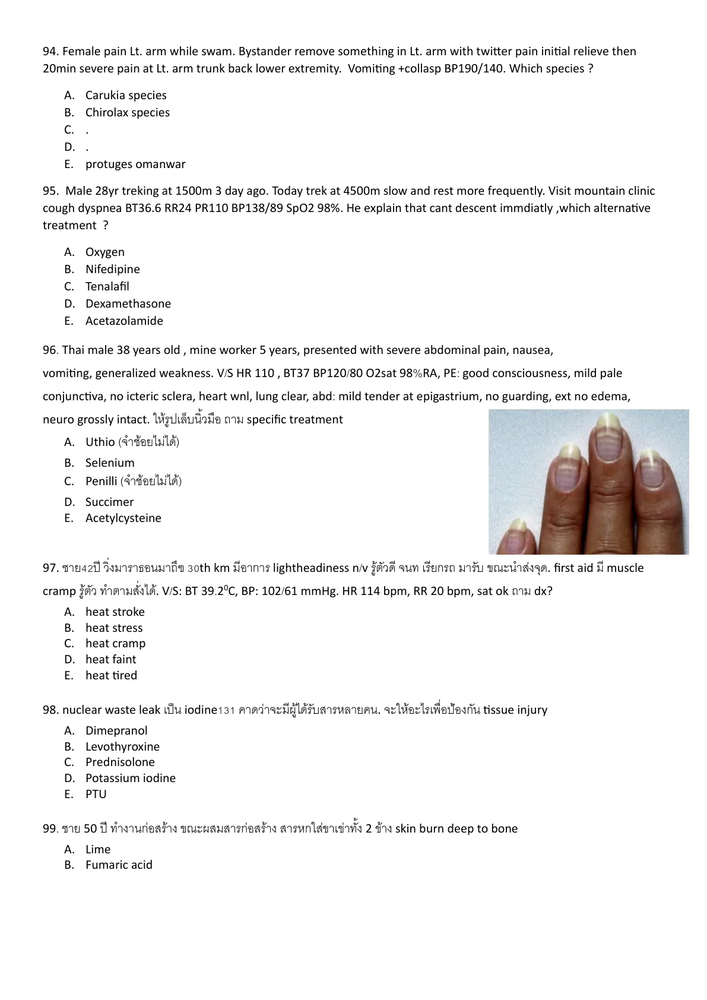
crop
ถูกต้อง
High-altitude pulmonary symptoms when descent is not possible should receive supplemental oxygen when available.
High-altitude pulmonary symptoms when descent is not possible should receive supplemental oxygen when available.
A15-0018A15-Q0018solution_ready
104. ออกรับผู้ป่วย ถูกแทงที่ left chest wall Dx open pneumothorax ทำ occlude dressing ระหว่างทางกลับรพ ผู้ป่วยเหนื่อย หายใจเร็ว RR 44 ทำอะไร
crop
ยังไม่ถูก
A. ICD
ยังไม่ถูก
B. needle thoracostomy
ยังไม่ถูก
C. cricothyroidotomy
ยังไม่ถูก
D. intubation
ถูกต้อง
Clinical deterioration after sealing an open pneumothorax suggests tension physiology from the dressing; the immediate maneuver is to release or burp it.
Clinical deterioration after sealing an open pneumothorax suggests tension physiology from the dressing; the immediate maneuver is to release or burp it.
A15-0019A15-Q0019solution_ready
106. ผู้ชาย 50 ปี MCA มีอาการปวดหลัง รู้สึกตัวดี. V/S ดี abdomen: soft, no guard. Back: tender at RtหรือLt. Lateral flank&lateral lumbar spine (ไม่ได้ปวดตรงกลาง) Work up CXR, pelvis: no Fx. FAST negative. UA: RBC 15-20 ถามว่าต้องทำอะไรต่อ
crop
ถูกต้อง
The full-page source shows stable blunt flank trauma with low-grade microscopic hematuria, negative FAST, and no pelvic fracture. This duplicates the A14 blunt-flank-trauma item already resolved as discharge/reassure rather than CT.
ยังไม่ถูก
B. CT pelvis?
ถูกต้อง
The full-page source shows stable blunt flank trauma with low-grade microscopic hematuria, negative FAST, and no pelvic fracture. This duplicates the A14 blunt-flank-trauma item already resolved as discharge/reassure rather than CT.
ถูกต้อง
The full-page source shows stable blunt flank trauma with low-grade microscopic hematuria, negative FAST, and no pelvic fracture. This duplicates the A14 blunt-flank-trauma item already resolved as discharge/reassure rather than CT.
The full-page source shows stable blunt flank trauma with low-grade microscopic hematuria, negative FAST, and no pelvic fracture. This duplicates the A14 blunt-flank-trauma item already resolved as discharge/reassure rather than CT.
A15-0020A15-Q0020solution_ready
108. Male 60 yr, present recurrent hemoptysis 500 ml, HR 135, BP 94/52, Osat 90% (RA). Most appropriate next step management? Film CXR: if LUL
crop
ยังไม่ถูก
A. RSI
ยังไม่ถูก
B. positive pressure ventilation
ยังไม่ถูก
C. emergency thoracotomy
ถูกต้อง
For massive hemoptysis from the left lung, position bleeding side down to protect the contralateral lung.
A 16-month-old is older than one year, so complete foreign-body airway obstruction is managed with abdominal thrusts rather than infant back blows/chest thrusts.
A 16-month-old is older than one year, so complete foreign-body airway obstruction is managed with abdominal thrusts rather than infant back blows/chest thrusts.
A15-0022A15-Q0022solution_ready
121. เด็กถูกผึ้งต่อยมา เหนื่อย เขียว sat drop 85 bp drop hr ช้า lung wheeze: anaphylaxis ให้ o2 กับ adrenaline im แล้ว แต่ยังมีเขียว cyanosis sat drop 88 EKG hr ช้า ทำไรต่อ
crop
ยังไม่ถูก
A. ติด pace
ยังไม่ถูก
B. ......
ถูกต้อง
Persistent cyanosis with bradycardia despite IM epinephrine and oxygen indicates impending respiratory failure requiring airway control.
The reviewed lateral neck film shows prevertebral soft-tissue swelling in a child with inspiratory stridor, favoring retropharyngeal abscess over croup or epiglottitis.
The reviewed lateral neck film shows prevertebral soft-tissue swelling in a child with inspiratory stridor, favoring retropharyngeal abscess over croup or epiglottitis.
A15-0024A15-Q0024solution_ready
137. Female 1 yr fever dyspnea. SpO2 91. Retraction wheezing. CXR hyperaeration, no infiltration. Mx.?
crop
ยังไม่ถูก
A. Adrenaline NB
ถูกต้อง
A 1-year-old with wheeze, hyperaeration, and no infiltrate is most consistent with bronchiolitis; supportive care including nasal suction is appropriate.
A 1-year-old with wheeze, hyperaeration, and no infiltrate is most consistent with bronchiolitis; supportive care including nasal suction is appropriate.
A15-0025A15-Q0025solution_ready
148. เด็ก 3 ปี ปวดท้อง 1 mo เหนื่อย อ้วก กินได้น้อย มี hx delay development V/S ปกติ มี pale conjunctivae no hepatosplenomegaly. CBC hct24 hb8 wbc กับ PLT ปกติ Blood smear microcytic anemia basophilic stippling ถาม dx
crop
ถูกต้อง
The stem pattern points to lead toxicity; confirmatory/management details depend on the full options, but the diagnosis is lead poisoning.
Sudden dyspnea with tachycardia, clear lungs, and hypoxemia in an otherwise healthy patient strongly suggests pulmonary embolism; CTPA is the diagnostic test.
A15-0029A15-Q0029solution_ready
158. ชาย 60 ปี U/D: lung cancer visit ED with pleuritic chest pain and shortness of breath Vs stable bp 90/60 HR 86, RR 28, spo2 96 room air. CXR: Right pleural effusion. Perform Rt lung thoracentesis Pleural fluid profile WBC 1,200 cell (N 80, Lym 20), LDH 500, Protein 4.0 Serum LDH 200, protein 4.2 ถาม cause of pleural effusion
crop
ยังไม่ถูก
A. Malignancy
ยังไม่ถูก
B. congestive heart failure
ยังไม่ถูก
C. hypoalbuminemia
ถูกต้อง
Neutrophil-predominant exudative pleural fluid with high LDH in an acute pulmonary presentation favors parapneumonic effusion.
Tension pneumothorax is an immediately reversible life threat and takes priority over non-pulsatile external bleeding.
A15-0032A15-Q0032solution_ready
11. A 20 year old male, a swimmer present with pruritus with pain at periauricular for 2 days, 1 day ago he used cotton bud to decongested his ears. His physical examination reveals BT 37 PR 80 RR 20 O2sat 97 otoscopic exam reveals perforated tympanic membrane without swelling or erythematous or discharge. What is the proper management?
crop
ยังไม่ถูก
A. Amoxicillin
ยังไม่ถูก
B. 5% Acetic acid
ยังไม่ถูก
C. 5% Acetic acid with hydrocortisone
ยังไม่ถูก
D. Ciprofloxacin ear drop with hydrocortisone
ถูกต้อง
Otitis externa with tympanic membrane perforation should receive a non-ototoxic fluoroquinolone-based topical drop.
Repeated caregiver-reported apnea with normal findings in the child is classic for factitious disorder imposed on another.
A15-0034A15-Q0034solution_ready
11. Female 34 yr brought by her parent after suicidal attempt ingestion some drugs. She had nausea and vomiting, AOC 2 hr after ingestion. V/S T 37c P100 BP 149/90 RR20 O2sat 95%. Heart lung normal. Abd mild tender epigastrium. After evaluation she loss of consciousness and found cardiac arrest. EKG sine wave then monomorphic VT (มีรูป). Lab ABG ph 7.4 PCO2 40 PO2 80 lactate 4, elyte K 7.5. What is toxin?
crop
ยังไม่ถูก
A. Cyanide
ถูกต้อง
GI symptoms, marked hyperkalemia, and ventricular dysrhythmia after drug ingestion are most consistent with severe digoxin poisoning.
A and B. Oral hydration plus stress-dose/triple-dose prednisolone
Rationale
Known adrenal insufficiency during febrile illness requires sick-day steroid escalation and hydration if the patient can tolerate oral intake.
A15-0037A15-Q0037solution_ready
52. Male 87 years old at nursery, presented with severe watery diarrhea 3 daysPTA 8-10 times/day, minimal bloody diarrhea last 24 hours, abdominal cramping at lower abdominal pain, history of levofloxacin used 12 days PTA from pneumonia. PE: V/S BT 38.9 HR 115 BP 100/65 RR22. GA: Elderly male. HEENT: not pale conjunctiva, anicteric sclera. Heart: regular tachycardia, full pulse. Lung: Fine crepitation both lower lungs. Abd: mild distension, generalized tender at lower abdomen, no guarding, no rebound, hypoactive bowel sound. Ext: No pitting edema. Neuro: Alert. Brown stool. Lab: CBC Hct 37.5% WBC 16k PMN 85 L15 Plt256k BUN 32 Cr 1.6. What is the most likely diagnosis?
HIV with CD4 80, hypoxemia, and diffuse interstitial infiltrates suggests PCP. TMP-SMX is not among the visible choices; in hypoxemic PCP, adjunct corticosteroid is the intended listed treatment.
HIV with CD4 80, hypoxemia, and diffuse interstitial infiltrates suggests PCP. TMP-SMX is not among the visible choices; in hypoxemic PCP, adjunct corticosteroid is the intended listed treatment.
A15-0039A15-Q0039solution_ready
75. Male 57 years old, U/D heart disease + COPD, presented with palpitation 2 hr. Deny chest pain, dyspnea, orthopnea, leg edema. T36.6, HR 168, RR 22, BP 109/68 (จำไม่ได้เป้ะ แต่ไม่ drop). PE ~ lung clear. POCUS preserved LVEF, มีบรรยาย echo ปรกติแต่มันหมด no structural heart abnormality, lung A-profile both. EKG as following (จำไม่ได้เป้ะๆ แต่คิดว่าเป็น regular wide QRS). What is the next appropriate management?
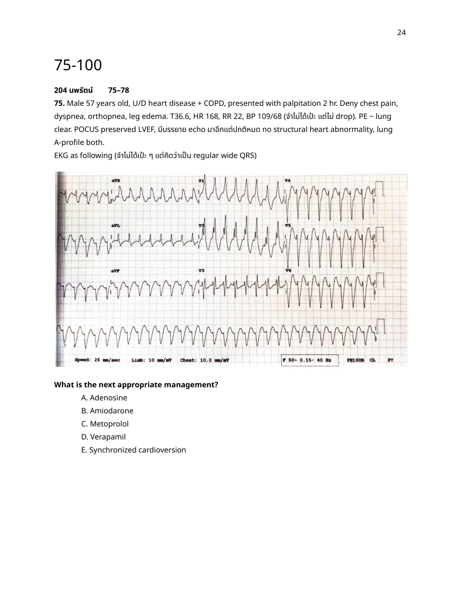
crop
ยังไม่ถูก
A. Adenosine
ถูกต้อง
Stable regular wide-complex tachycardia is treated as VT; IV amiodarone is an appropriate pharmacologic option.
Stable AF with WPW should avoid AV nodal blockers such as digoxin, verapamil, and adenosine. The duplicate combined-2025 source shows the missing options D/E and resolves the same item as amiodarone when procainamide is absent.
A15-0041A15-Q0041solution_ready
83. หญิง obese, กินยาคุม, นั่งเครื่องบิน มาด้วยหอบ ไอ hemoptysis HR 140 SpO2 RA 88 BP drop, EKG Sinus tachycardia S1Q3T3, Echo RV dilate, TRPG 48 ถาม next appropriate investigation
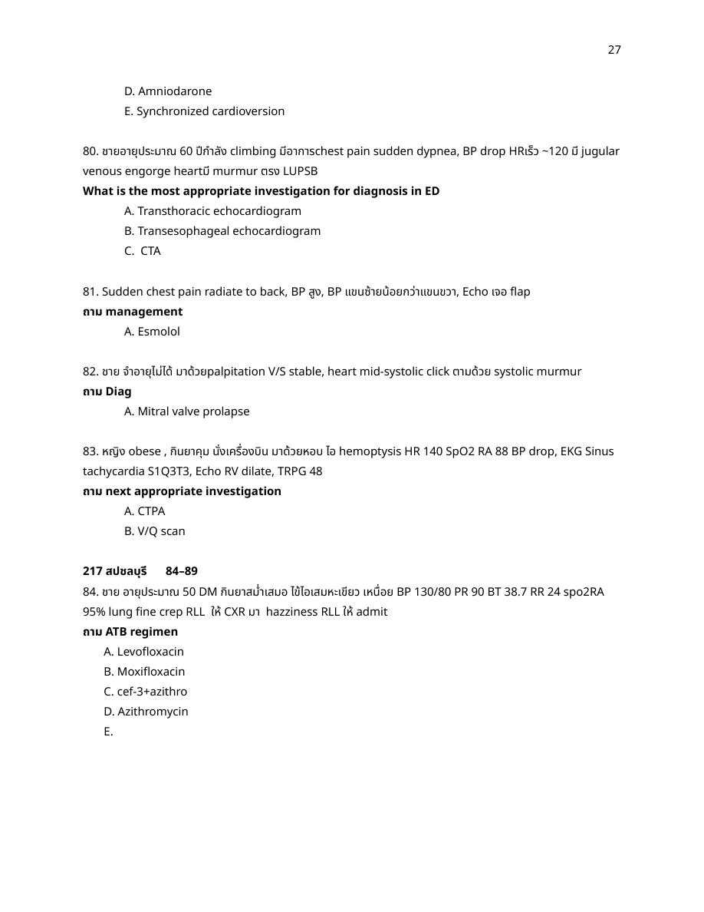
crop
ถูกต้อง
PE with shock and RV dilation is highly likely; if an investigation is requested and feasible, CTPA is the diagnostic test.
Inpatient community-acquired pneumonia with comorbidity is treated with a beta-lactam plus macrolide regimen.
A15-0043A15-Q0043solution_ready
85. M 50 yr Hx of TB lung presented with massive hemoptysis and respiratory distress. His V/S are BT... PR 140 BP 70/40 SpO2 71% other PE shows decreased BS left lung with crepitations heard. CXR shows haziness of entire left lung with cavitary lesions. After IV fluid resuscitation and MWB What is the most appropriate next step Mx?
crop
ยังไม่ถูก
A. HFNC
ยังไม่ถูก
B. cricothyroidotomy
ยังไม่ถูก
C. Forgaty catheter
ยังไม่ถูก
D. Bronchoscopy
ถูกต้อง
For massive hemoptysis from the left lung with airway threat, isolate and ventilate the non-bleeding right lung.
For massive hemoptysis from the left lung with airway threat, isolate and ventilate the non-bleeding right lung.
A15-0044A15-Q0044solution_ready
86. Male 65yr, UD severe COPD, 2day wheezing with purulent productive cough, then 1d worsening dyspnea ญาติบอก new confusion. PE: BT37.5 c PR112/min. RR34 SpO2 85% RA. GA: anxious, orientate to person only, Lung: decrease air entry, diffuse wheezing, prolonged expiration / CXR: no infiltration or consolidation, flattened diaphragm / ABG pH7.25 pCO2 70, pO2 50, HCO3 30. What is the most appropriate next step Mx?
crop
ถูกต้อง
COPD exacerbation with hypercapnic acidosis and preserved airway protection is an indication for NIV.
After asthma treatment, clinical improvement with stable vital signs and no retractions supports discharge with appropriate medications and return precautions.
After asthma treatment, clinical improvement with stable vital signs and no retractions supports discharge with appropriate medications and return precautions.
A15-0046A15-Q0046solution_ready
117. ชาย 75 ปี ไข้ไอเหนื่อย 2 สัปดาห์ V/S sepsis BT 39 BP 130/70 HR 110 Spo2 98 PE: Crep+ Dullness percussion right lung ให้รูป Film: Pneumonia with parapneumonic effusion (patchy RML+Meniscus sign) Lab: CBC wbc 1800(N90%), Pleural fluid Protein 4.5(serum8), LDH 1500(Serum 250), Glucose 35% WBC 2900(N90%) ไม่ให้ pleural fluid PH ตาม N or ext management
crop
ถูกต้อง
Low pleural glucose, very high LDH, and neutrophil predominance indicate complicated parapneumonic effusion/empyema requiring drainage.
COPD exacerbation with hypercapnic acidosis after bronchodilators needs noninvasive ventilatory support; the option likely uses CPAP to represent NIV.
A15-0050A15-Q0050solution_ready
159. ญ 70 ปี on tracheostomy last year due to tracheal stenosis รับแจ้งว่า 20 นาทีเหนื่อยมากขึ้น BT 37.2 RR28 bp 132/74 spo2 89%(RA) E4v5m6. Mild rs distress. Lung: decrease BS both lung, no crep. มี secretion ที่ TT ลอง suction แล้วใส่ไม่เข้า. Next management
crop
ยังไม่ถูก
A. Suction
ยังไม่ถูก
B. Deflated cuff
ยังไม่ถูก
C. Hyper inflated cuff
ถูกต้อง
In a tracheostomy patient where a suction catheter cannot pass, an obstructed inner cannula is likely and should be removed.
Pediatric bacterial pneumonia with effusion requiring hospital-level care is reasonably treated with a third-generation cephalosporin such as ceftriaxone.
Pediatric bacterial pneumonia with effusion requiring hospital-level care is reasonably treated with a third-generation cephalosporin such as ceftriaxone.
A15-0055A15-Q0055solution_ready
185. Male child 4 yr complete vaccination presented with fever, dyspnea, barking cough with previous URI symptoms. V/S stable SpO2 98% RA other PE shows inspiratory stridor, subcostal retractions with mild distress. Lung no rhonchi/wheezing, good capillary refill time. Initial Dexa 0.6 mg/kg and epinephrine nebulized were given. After initial treatment patient has no distress, no stridor heard, clearly improved. Next step Mx?
crop
ยังไม่ถูก
A. D/C
ยังไม่ถูก
B. Oral prednisolone course
ยังไม่ถูก
C. Admit observe
ถูกต้อง
After nebulized epinephrine for croup, observe for recurrence before discharge.
Recurrent infections beginning in infancy with diarrhea and marked lymphopenia suggests SCID.
A15-0057A15-Q0057solution_ready
80. ชายอายุประมาณ 60 ปีกำลัง climbing มีอาการ chest pain sudden dypnea, BP drop HRเร็ว ~120 มี jugular venous engorge heart มี murmur ตรง LUPSB. What is the most appropriate investigation for diagnosis in ED
crop
ถูกต้อง
Acute dyspnea/chest pain with hypotension, JVP elevation, and murmur is best evaluated at bedside with echocardiography.
Rapid ascent with free intra-abdominal air after diving is part of pulmonary overinflation/barotrauma spectrum.
A15-0068A15-Q0068solution_ready
M 60yr bedridden on tracheos suspect pneumonia กำลังจะเปลี่ยน silver tube หลังดึงออก bleed. What is the most appropriate next step management?
crop
ยังไม่ถูก
A. Hemostatic gauze
ยังไม่ถูก
B. Put silver tube black
ยังไม่ถูก
C. Initial continue suction
ยังไม่ถูก
D. Put foley + blow balloon
ถูกต้อง
Suspected tracheo-innominate fistula bleeding is temporized by direct digital pressure against the anterior trachea/innominate artery while securing the airway.
Suspected tracheo-innominate fistula bleeding is temporized by direct digital pressure against the anterior trachea/innominate artery while securing the airway.
A15-0069A15-Q0069solution_ready
181. ชาย 66 ปี dyspnea on exertion 2 day BP80/45 HR40 EKG: AV block morbit2 ถาม most appropriate next step management
crop
ยังไม่ถูก
A. Atropine
ยังไม่ถูก
B. Dopamine
ยังไม่ถูก
C. Aminophylline
ถูกต้อง
Mobitz II with hypotension is unstable high-grade AV block and needs immediate pacing.
Orthopnea, crackles, and acute dyspnea are consistent with acute decompensated heart failure/pulmonary edema.
A15-0071A15-Q0071solution_ready
ชาย 60 ปี severe chest pain after forceful vomiting vs BT37 HR 86 BP 110/70 RR24 sat 96 PE all normal ให้ EKG and CXR > bilat pleural effusion ถาม investigation of choice
Severe chest pain after forceful vomiting with pleural effusion suggests Boerhaave syndrome. Duplicate Boerhaave investigation items in A14 list esophagogram as the intended diagnostic investigation.
A15-0072A15-Q0072solution_ready
152. Pneumonia HIV CD 4 538 BT 38 RR 24 BP 110/76 sat94% Lung crepitation Lt lung. Most pathogen
crop
ยังไม่ถูก
A. PCP
ยังไม่ถูก
B. Mycoplasma pneumoniae
ยังไม่ถูก
C. Chlamydia pneumoniae
ถูกต้อง
With preserved CD4 count, common bacterial CAP such as pneumococcus is more likely than opportunistic pneumonia.
Ventilated COPD/asthma with sudden hypotension from auto-PEEP is immediately treated by disconnecting the circuit to allow exhalation.
A15-0077A15-Q0077solution_ready
ชาย 50 ปี u/d COPD with respiratory failure on ETT หลังใส่ ETT 15 นาทีเหนื่อยขึ้น ให้ EKG: STD V1-6 ตอนนี้ setting: PCV mode IP 17 PEEP 5 I:E 1:3 FiO2 0.4 (Vt=7 ml/kg) ถามว่าจะปรับ ventilator ยังไง
crop
ถูกต้อง
In intubated COPD, worsening dyspnea shortly after ventilation can reflect intrinsic PEEP and increased trigger work. The usual broad correction is to reduce minute ventilation and allow more expiratory time, but that option is not visible in this source row. Among the listed choices, a modest increase in external PEEP is the best available adjustment because it can reduce the inspiratory threshold load from auto-PEEP; increasing FiO2, tidal volume, or respiratory rate would not address the mechanics and may worsen dynamic hyperinflation.
In intubated COPD, worsening dyspnea shortly after ventilation can reflect intrinsic PEEP and increased trigger work. The usual broad correction is to reduce minute ventilation and allow more expiratory time, but that option is not visible in this source row. Among the listed choices, a modest increase in external PEEP is the best available adjustment because it can reduce the inspiratory threshold load from auto-PEEP; increasing FiO2, tidal volume, or respiratory rate would not address the mechanics and may worsen dynamic hyperinflation.
A15-0078A15-Q0078solution_ready
Case female 60 yr pneumonia with RS failure on PCV. In PCV PI 17 PEEP 5 RR 14 FiO2 0.5 i-time 1 sec TV 500 ml MV 7.4 L/min V/S BP110/80 RR 18 PR 110 sat 95%. ABG after 30 min pH 7.3 PCO2 35 PO2 100 HCO3 12 Na 135 K 3.8 Cl 110 HCO3 10. ปรับ setting
crop
ถูกต้อง
The ABG shows metabolic acidosis with inadequate ventilatory compensation, so minute ventilation should be increased.
The row asks management for a double-triggering ventilator waveform. Duplicate source B-0022 explicitly gives the answer for ventilator double triggering as increasing inspiratory time, matching the same source pattern used to clear A06-0117.
Fever, neck symptoms, dysphagia/drooling, or posterior pharyngeal swelling in a child points to retropharyngeal abscess.
A15-0083A15-Q0083solution_ready
130. 10 years old boy, high grade fever, sore throat, breath difficulty, drooling, poor vaccine history, record but generally healthy, no PH medication used. V/S: BT 39, RR 22, PR 120, BP 110/80, SpO2 94%RA, insist to upright position, HEENT: not injected pharynx, Lungs: equal BS, high pitched inspiratory stridor. Most likely patho [MCQ 65]
- H influenza virus - group A streptococcus - H influenza type B - RSV - mixed aerobe and anaerobe organism
The reviewed teaching slide marks conscious sedation with fiberoptic intubation for this difficult-airway/epiglottitis-style item, consistent with maintaining spontaneous ventilation when possible.
A15-0085A15-Q0085solution_ready
122. A 5 years old boy fever with cough for 1 day sitting in tripod position. Severe RS distress. Attending physician tried ETT 3 attempts failed, patient collapse weak pulse O2 sat 65%, on O2 mask with bag 10 LPM. What most appropriate next step management [MCQ 65]
- LMA - FOL - Needle cricothyroidotomy - Surgical cricothyroidotomy - Small size uncuffed ETT
Croup with stridor at rest/retractions needs nebulized epinephrine and steroid therapy.
A15-0087A15-Q0087solution_ready
135. Girl 4 yr, history of pharyngitis 2 days. She presented with drooling for 1 day, she has neck swelling, fever, trismus, odynophagia, PE: BT 39 C, BP 140/80 mmHg, RR 18/min, PR 112 bpm. HEENT shown hyperextend, stiffness, torticollis, injected pharynx, swelling posterior oropharynx. Lung clear. What is the most likely diagnosis? [MCQ 64]
A) Diphtheria B) Ludwig angina C) Bacterial tracheitis D) Peritonsillar abscess E) Retropharyngeal abscess
Unvaccinated child with severe supraglottic infection features most strongly suggests Hib.
A15-0089A15-Q0089solution_ready
A fully immunized 2 year old presents to emergency room with 3 days of low grade fever, drooling, and noisy breathing. Over the last few hours he has developed fever to 40 c and looks toxic. He has inspiratory stridor. The patient seems to be drinking with pain and keep his neck extended. Which is the most common pathogen for this disease process? [MCQ 61]
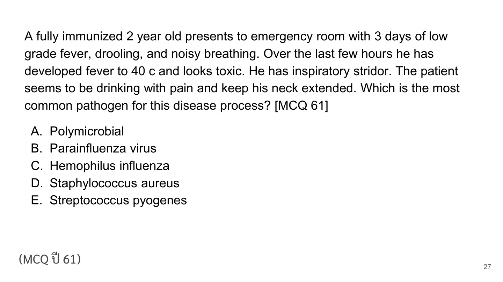
p27
ถูกต้อง
Retropharyngeal abscess is usually polymicrobial oral flora.
Retropharyngeal abscess is usually polymicrobial oral flora.
A15-0090A15-Q0090solution_ready
A 7 year old boy was brought by his mother because of high grade fever for 2 days. He had drooling and dysphagia. On examination: BT 39.9, BP 112/56, PR 124, RR 32, O2 sat 97%RA, no cyanosis, no accessory muscle use, intercostal retraction, no abdominal paradox, no stridor, no adventitious sounds both lungs, good conscious and cooperation. His lateral neck film showed hypopharyngeal dilatation, obliteration of the vallecula and thickened aryepiglottic folds. What is the best airway management? [MCQ 61]
p30
ยังไม่ถูก
A. Only close monitoring
ยังไม่ถูก
B. Intubation immediately
ยังไม่ถูก
C. Emergency tracheotomy
ถูกต้อง
Suspected epiglottitis with threatened airway should be managed by controlled intubation in the OR with expert support.
Suspected epiglottitis with threatened airway should be managed by controlled intubation in the OR with expert support.
A15-0091A15-Q0091solution_ready
A 2-month-old female infant presented in emergency department due to difficult breathing for 2 days. She did not have fever nor coughing. Birth history was unremarkable. Physical examination revealed BT 36.8 C, HR 116/min, RR 64/min, O2 saturation 94%; active infant, dyspnea, no cyanosis; heart - regular, normal S1S2, no murmur; chest - suprasternal & subcostal retraction, stridor both lungs, no crepitation; reddish-purple papules and confluent bright red plaques 2x3 cm. at scalp. What is the most helpful investigation?
A. พี่ ให้ Penicillin 7 days + น้อง erythromycin 600 mg/day
ถูกต้อง
The source explanation page states patient treatment for 14 days and calculates erythromycin 40 mg/kg/day for the 20-kg patient as 800 mg/day. It also gives close-contact prophylaxis 7-10 days; among the visible choices, option B is the one matching the patient-treatment duration and 800 mg/day dose.
B. พี่ให้ penicillin 14 days + น้อง erythromycin 800 mg/day
Rationale
The source explanation page states patient treatment for 14 days and calculates erythromycin 40 mg/kg/day for the 20-kg patient as 800 mg/day. It also gives close-contact prophylaxis 7-10 days; among the visible choices, option B is the one matching the patient-treatment duration and 800 mg/day dose.
A15-0095A15-Q0095solution_ready
หญิง U/D asthma, dx ventilatory failure ทำ RSI ได้ etomidate + succinyl choline, ใส่ ETT ผ่าน cord ดี หลังใส่ BP drop 110/80, SpO2 90%, lung equal, trachea in midline, ให้กราฟ ventilatory monitoring ถาม appropriate management
crop
ยังไม่ถูก
A. Drip dopamine rate 5-20 mcg/kg/min
ยังไม่ถูก
B. Needle thoracostomy
ยังไม่ถูก
C. บีบ ambu bag
ถูกต้อง
Intubated asthma with sudden hypotension/desaturation and no pneumothorax signs suggests dynamic hyperinflation; disconnect to allow exhalation.
Page 9 is the scope-of-practice table used to justify the preceding EMT-B asthma question. In the respiratory/drug-technique section, the relevant row is assisting the patient with their own inhaled medication; for the EMT/EMT-B column, the table indicates level `ข`, while nebulizer and bag-mask options require higher supervision/authority and are not the page 8 answer.
A15-0102A15-Q0102solution_ready
คนไข้ asthma ใส่ ETT เลือกยา RSI ตัวไหน
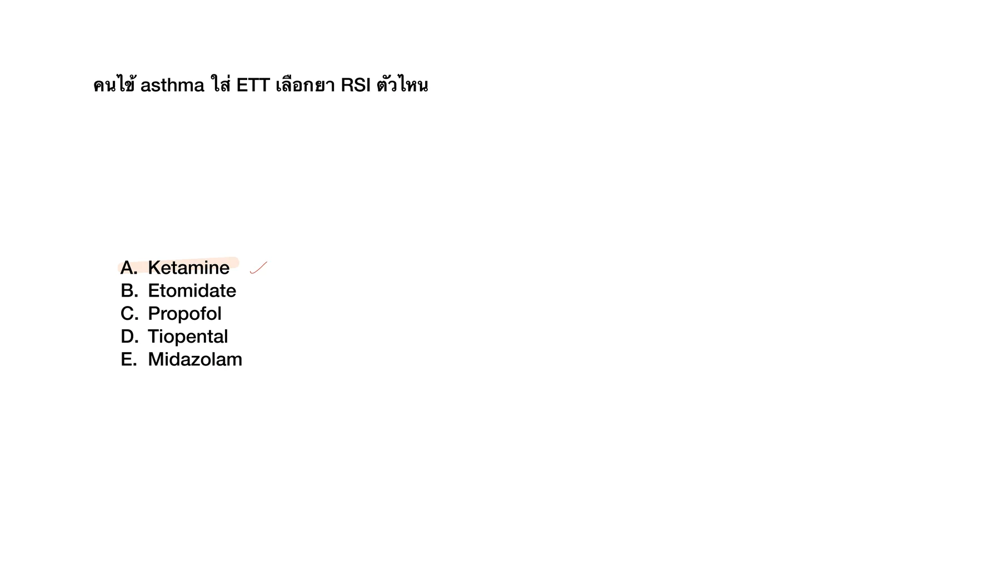
crop
ถูกต้อง
Ketamine is a preferred induction agent in severe asthma because it preserves hemodynamics and has bronchodilatory properties.
C. difficile colitis after hospitalization/antibiotic exposure is treated with oral vancomycin when listed.
A15-0112A15-Q0112solution_ready
42. A Thai female 68-year-old known underlying of DCM with acute dyspnea. Your physical examination found decreased breath sound both lungs with pitting edema 2+ both legs. Film chest x-ray show new bilateral pleural effusion. Pleural effusion profile: serum LDH 100 U/L [100-200 U/L], protein 7.0 g/dL, albumin 3.5 g/dL; pleural fluid LDH 50 U/L, protein 3.7 g/dL, albumin 2.0 g/dL, pleural cytology pending. What is the suspected cause of pleural effusion?
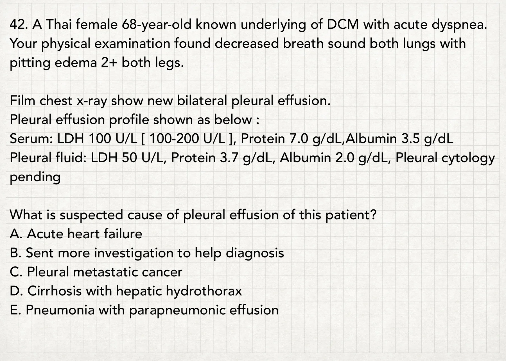
crop
ถูกต้อง
Heart failure can produce pseudoexudative pleural fluid after diuresis; bilateral effusions in DCM support acute HF.
For right-sided bleeding, isolate/ventilate the left lung and keep the bleeding right side dependent.
A15-0115A15-Q0115solution_ready
Male 70 yrs, UD pulmonary TB กำลังรักษาอยู่ วันนี้มาด้วย hemoptysis 600 ml หลังจาก on ETT ยังมี bleed ทาง ETT 500 ml BP 80/50 PR 130 ถาม proper management
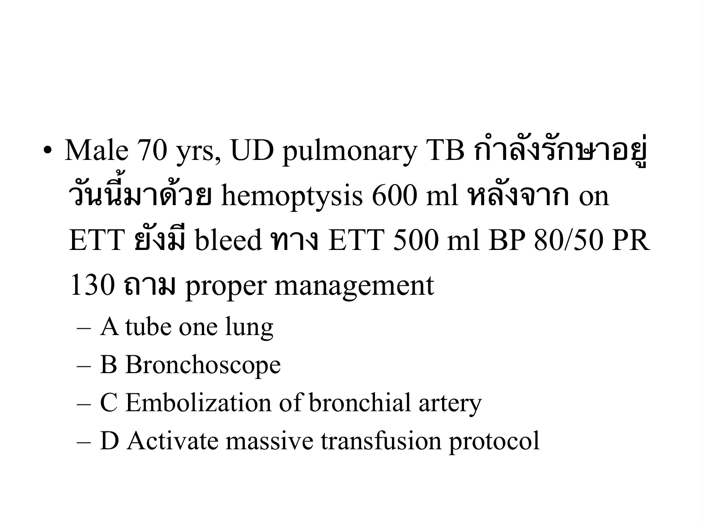
crop
ยังไม่ถูก
A. tube one lung
ยังไม่ถูก
B. Bronchoscope
ยังไม่ถูก
C. Embolization of bronchial artery
ถูกต้อง
After airway control, ongoing massive hemoptysis with shock requires immediate resuscitation including massive transfusion while arranging definitive control.
After airway control, ongoing massive hemoptysis with shock requires immediate resuscitation including massive transfusion while arranging definitive control.
A15-0116A15-Q0116solution_ready
RUL mass presents with hemoptysis ถามว่า bleeding จาก vessels ใด
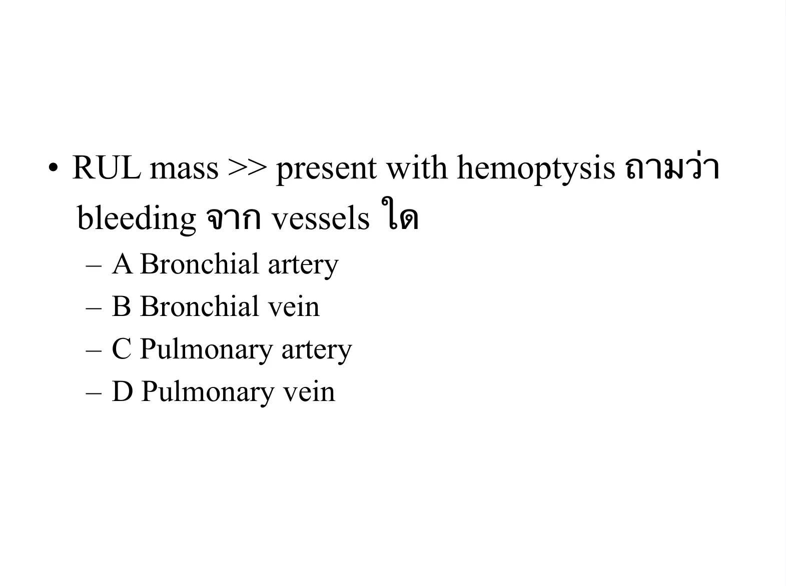
crop
ถูกต้อง
Most life-threatening hemoptysis originates from the high-pressure bronchial arterial circulation.
Most life-threatening hemoptysis originates from the high-pressure bronchial arterial circulation.
A15-0117A15-Q0117solution_ready
MCQ 2560
22 years old woman present with oral bleeding for 6 hrs. She has had bleeding per gum and hypermenorrhea but denieds family history of bleeding disorder.
C. Third-generation cephalosporin plus azithromycin
Rationale
Hospitalized CAP is treated with a beta-lactam such as ceftriaxone plus azithromycin.
A15-0125A15-Q0125solution_ready
85. M 50 yr Hx of TB lung presented with massive hemoptysis and respiratory distress. His V/S are BT… PR 140 BP 70/40 SpO2 71% other PE shows decreased BS left lung with crepitations heard. CXR shows haziness of entire left lung with cavitary l esions. After IV fluid resuscitation and MWB what is the most appropriate next step Mx? 1. HFNC 2. cricothyroidotomy 3. Forgaty catheter 4. Bronchoscopy 5. Right lung mainstem intubation
Massive left-sided hemoptysis with airway risk is managed by isolating/ventilating the right lung.
A15-0130A15-Q0130solution_ready
178. 3-year boy (BW 15 kg) presented with alteration of consciousness. Suspected he might swallow bathroom cleaner (น่าจะ HCl) → Intubate ไป ตั้ง setting TV 90, PEEP 5, RR 12, FiO2 0.8 หลังจากนั้นเจาะ ABG next 45 min - pH 7.15, PaCO2 57 (ไม่แน่ใจแต่ราว ๆ 50 กว่า ๆ), PaO2 60, HCO3 16, BE จําไม่ได้ What is appropriate management?
crop
ถูกต้อง
Ventilated child with severe acidemia and elevated pCO2 needs increased minute ventilation; raising RR is the most direct listed adjustment.
Ventilated child with severe acidemia and elevated pCO2 needs increased minute ventilation; raising RR is the most direct listed adjustment.
A15-0132A15-Q0132solution_ready
52. Male 87 years old at nursery, presented with severe watery diarrhea 3 days PTA 8-10 times/day, minimal bloody diarrhea last 24 hours, abdominal cramping at lower abdominal pain, history of levofloxacin used 12 days PTA from pneumonia. PE: V/S BT 38.9 HR 115 BP 100/65 RR22 GA: Elderly male HEENT: not pale conjunctiva, anicteric sclera Heart: regular tachycardia, full pulse Lung: Fine crepitation both lower lungs Abd: mild distension, generalized tender at lower abdomen, no guarding, no rebound, hypoactive bowel sound Ext: No pitting edema Neuro: Alert Brown stool Lab: CBC Hct 37.5% WBC 16k PMN 85 L15 Plt256k BUN 32 Cr 1.6 What is the most likely diagnosis? 1. E.coli 2. Amoebic enteritis 3. C.difficile enteritis 4. Salmonella enteritis 5. Shigella dysenteriae
The child has SVT with hypotension, hypoxia, and respiratory distress, so this is unstable SVT. Synchronized cardioversion is indicated immediately, with sedation if it does not delay treatment.
The child has SVT with hypotension, hypoxia, and respiratory distress, so this is unstable SVT. Synchronized cardioversion is indicated immediately, with sedation if it does not delay treatment.
Exertional symptoms with systolic murmur in the HOCM physiology setting are caused by dynamic LV outflow tract obstruction, reducing stroke volume during stress/dehydration.
ยังไม่ถูก
B. decrease afterload due to excessive vasodilatation
ยังไม่ถูก
C. decrease cardiac output due to decrease LV systolic function
ยังไม่ถูก
D. increase preload due to increase peripheral arterial resistance
ยังไม่ถูก
E. decrease stroke volume due to accessory pathway induce arrhythmia
Exertional symptoms with systolic murmur in the HOCM physiology setting are caused by dynamic LV outflow tract obstruction, reducing stroke volume during stress/dehydration.
75. Male 57 years old, U/D heart disease + COPD, presented with palpitation 2 hr. Deny chest pain, dyspnea, orthopnea, leg edema. T36.6, HR 168, RR 22, BP 109/68 (จําไม่ได้เป้ะ แต่ไม่ drop). PE ~ lung clear. POCUS preserved LVEF, มีบรรยาย echo มาอีกแต่ปกติหมด no structural heart abnormality, lung A-profile both. EKG as following (จําไม่ได้เป้ะ ๆ แต่คิดว่าเป็น regular wide QRS) What is the next appropriate management?
crop
ถูกต้อง
A stable regular wide-complex tachycardia with no structural heart abnormality can be managed with adenosine as a diagnostic and therapeutic step when SVT with aberrancy is possible. Cardioversion is reserved for instability.
A stable regular wide-complex tachycardia with no structural heart abnormality can be managed with adenosine as a diagnostic and therapeutic step when SVT with aberrancy is possible. Cardioversion is reserved for instability.
80. ชายอายุประมาณ 60 ปีกําลัง clambing มีอาการchest pain sudden dypnea, BP drop HRเร็ว ~120 มี jugular venous engorge heartมี murmur ตรง LUPSB, what is the most appropriate investigation for diagnosis in ED
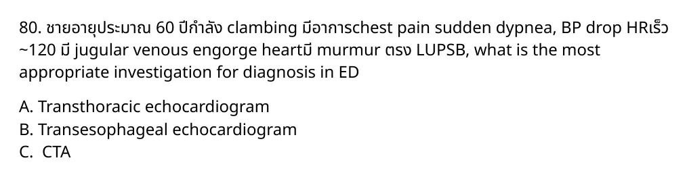
crop
ถูกต้อง
Sudden dyspnea/chest pain with hypotension, JVD, and murmur suggests an unstable obstructive or mechanical cardiac diagnosis. Bedside transthoracic echo is the fastest ED diagnostic test among the options.
Sudden dyspnea/chest pain with hypotension, JVD, and murmur suggests an unstable obstructive or mechanical cardiac diagnosis. Bedside transthoracic echo is the fastest ED diagnostic test among the options.
Fever/cough followed by shock, pulmonary edema after intubation, and EF 15% suggests cardiogenic shock from severe myocarditis or acute cardiomyopathy. Dobutamine is the listed inotrope that directly supports low cardiac output.
82. เด็ก 3 ปี แม่พามา วันนี้ irritable, lethargic especially during feeding BT 37.2 RR4 BP70/50 HR240 PE: ปกติหมด neuro active ดี. ได้ให้ IV NSS แล้ว EKG: SVT rate 240 ถาม Mx
crop
ยังไม่ถูก
A. NSS
ยังไม่ถูก
B. Carotid massage
ยังไม่ถูก
C. Adenosine
ถูกต้อง
SVT at 240 with lethargy, severe bradypnea/respiratory failure, and hypotension (70/50) is unstable. Unstable pediatric tachyarrhythmia requires synchronized cardioversion. Adenosine is for stable regular narrow-complex SVT or can be considered only if it does not delay cardioversion.
SVT at 240 with lethargy, severe bradypnea/respiratory failure, and hypotension (70/50) is unstable. Unstable pediatric tachyarrhythmia requires synchronized cardioversion. Adenosine is for stable regular narrow-complex SVT or can be considered only if it does not delay cardioversion.
References
- RCH Clinical Practice Guideline, SVT: unstable child with shock/altered conscious state needs synchronized cardioversion. https://www.rch.org.au/clinicalguide/guideline_index/Supraventricular_Tachycardia_SVT/
A15-0139A15-Q0139solution_ready
Male 38 year old chronic alc. Drinking, DM on MFM 2x2, dyspnea after heavy drinking for 2 day, At ER PE: good consciousness, tachypnea (ไม่ได้ตรวจร่างกายอื่น) lab BS 150, ABG 7.25, PCO2 25, PO2 130, HCO3 10, b-OH 12, urine ketone neg Dx? 1. Methanol intox 2. DKA 3. AKA 4. Euglycemic DKA 5. MALA
A 45-year-old man presented to emergency department compliant of sudden palpitation. He stated that he had headache that not persisted more than an hour, but sporadic and often accompanied by sudden whole body sweating and palpitation without chest pain. He had abdominal and back pain. His body temperature was 36.8 C and his blood pressure was 190/120 mmHg, pulse rate was 112/minute with regular rate, respiratory rate was 24/minutes without respiratory distress, and oxygen saturation was 98% on room air. ECG 12-leads shown sinus tachcardia with no ST-T change. Other physical examination was unremarkable with the exception of moist palms, mild tender at abdomen and back.
Which test is the most likely to confirm diagnosis
crop
ถูกต้อง
Plasma/serum metanephrines are the preferred biochemical test for pheochromocytoma.
A Thai male 30 year old with asthma, presents with palpitation for 2 hours. Vital sign: BT 39 C HR 160 irregular BP 150/100 mmHg RR 24 O2sat 90% RA. He has agitation and confusion. On physical examination reveal exophthalmos, thyroid gland enlargement, fine crepitation of both lungs, and pitting edema of both legs. EKG shows atrial fibrillation rate 160 bpm. Laboratory results show: TSH 0.02 uIU/ml (0.27-4.2), FT3 8.9 pg/ml (2.02-4.43), FT4 9.8 ng/dL (0.93-1.71). Which is the most appropriate management?
crop
ยังไม่ถูก
A. Esmolol 250 mcg/kg IV load to inhibit peripheral adrenergic effect.
ถูกต้อง
In thyroid storm with asthma/pulmonary congestion, beta blockade is risky; PTU is the best listed core therapy.
ยังไม่ถูก
C. Lugol solution 10 drops after giving PTU at least 1 hour to prevent thyroid hormone reabsorption.
ยังไม่ถูก
D. Hydrocortisone 300 mg IV for inhibit thyroid hormone synthesis.
ยังไม่ถูก
E. MMI 20 mg oral for inhibit peripheral adrenergic effect.
Male 28yr treking at 1500m 3 day ago. Today trek at 4500m slow and rest more frequently. Visit mountain clinic cough dyspnea BT36.6 RR24 PR110 BP138/89 SpO2 98%. He explain that cant descent immidiatly, which alternative treatment?
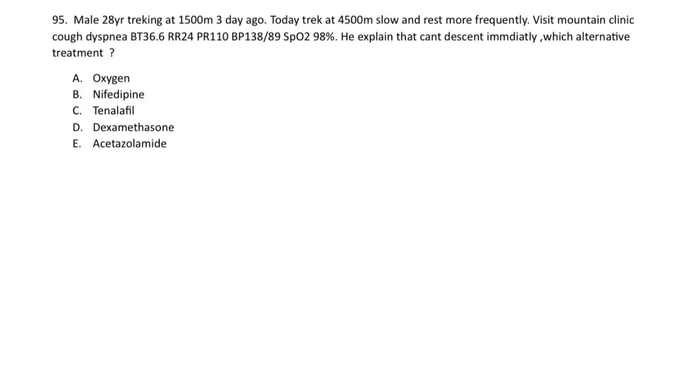
crop
ถูกต้อง
The source answer page circles oxygen. Clinically this is high-altitude illness with dyspnea/cough during rapid ascent where descent is not immediately possible; supplemental oxygen is the best immediate alternative/supportive treatment. Nifedipine or tadalafil are adjuncts for HAPE when oxygen/descent is unavailable or as preventive therapy, but oxygen is the direct first treatment offered in the options.
The source answer page circles oxygen. Clinically this is high-altitude illness with dyspnea/cough during rapid ascent where descent is not immediately possible; supplemental oxygen is the best immediate alternative/supportive treatment. Nifedipine or tadalafil are adjuncts for HAPE when oxygen/descent is unavailable or as preventive therapy, but oxygen is the direct first treatment offered in the options.
References
- Source answer crop: `source_pdf_inventory/page_images/exam-r2-เฉลย-environment-2566/page_0003.png`. - Wilderness Medical Society altitude illness guideline: oxygen/descent are core treatment options for altitude illness including HAPE. https://journals.sagepub.com/doi/10.1016/j.wem.2023.05.013
A15-0143A15-Q0143solution_ready
19. หญิงประมาณ 35 ปี ดํานํ้าลึก 100ft 30m ปฏิบัติตามกฏการดํานํ้าทุกอย่าง มีการหยุดพักหายใจ ระหว่างการขึ้นทุกอย่าง หลังจากขึ้นจากผิวนํ้ามา 30 นาที ผู้ป่วยมีอาการเจ็บหน้าอก หายใจเหนื่อย เวียนศีรษะ ไอ ไม่มีไข้ SPO2 92%, RS: Clear BL, trachea in midline NS: WNL no neurodeficit CXR: no infiltration BL A: Barotrauma B: DCS type I C: DCS type II D: Arterial gas embolism E: Nitrogen narcosis
Symptoms begin after surfacing from a 100-ft dive and include cardiopulmonary/vestibular symptoms: chest pain, dyspnea, dizziness, cough, and low oxygen saturation. DCS type I is mainly pain/skin/lymphatic; DCS type II includes neurologic, vestibular, and cardiopulmonary involvement. Arterial gas embolism usually presents very rapidly with prominent neurologic deficits after ascent.
References
- Merck Manual Professional, Decompression Sickness: type II includes neurologic, vestibular, and pulmonary manifestations. https://www.merckmanuals.com/professional/injuries-poisoning/injury-during-diving-or-work-in-compressed-air/decompression-sickness
A15-0144A15-Q0144solution_ready
Q9. เด็กหนัก 20 กก. ถูกงูแมวเซากัด หลังจากให้Antivenom ไป 15 นาที มีอาการหายใจ ล าบาก PE : Skin : Wheal and flare , Lungs : Wheezing at both lungs หลังจากหยุดให้Antivenom และให้On O2 cannula แล้ว Most appropriate Mx?
Test for Snake bite ,.pdf, p.2
ถูกต้อง
A. Epinephrine(1:1000) 0.2 ml IM
ถูกต้อง
B. Epinephrine(1:10000) 0.2 ml IM
ถูกต้อง
C. Epinephrine(1:1000) 0.2 ml IV
ถูกต้อง
D. Epinephrine(1:10000) 0.2 ml IV
ถูกต้อง
E. Epinephrine 12 ml + NSS up to 100 ml iv drip rate 1 ml/hr
Source: Old special HTML: A16 | Page/slot: old-special | Marker: a16-envenomation-snake-marine-q9
Reference: Source: Old special HTML: A16 | Page/slot: old-special | Marker: a16-envenomation-snake-marine-q9
ซ่อนเฉลยเปิดเฉลยSolution readyA15-0144 answer
Answer
Answer not imported.
Rationale
Rationale not imported.
References
- Source note: Source image preserved from Test for Snake bite ,.pdf p.2. No answer/lesson in this collection pass. - Original reference: Reference: Source: Test for Snake bite ,.pdf | p.2 | full source page rendered; answer intentionally not imported.
A15-0145A15-Q0145solution_ready
82. A 65-year-old man came to ED due to developing stridor for 1 day. His wife told that he had fever and sore throat which were not improved after treatment of amoxicillin for 3 days. On physical examination, he had febrile and gray-white patch on both tonsils and posterior pharynx. He also had stridor with mild dyspnea. O2 sat was 98%.
What is the next step management in this patient after throat swab culture and antibiotic treatment
crop
ยังไม่ถูก
A. dT vaccine
ถูกต้อง
Suspected respiratory diphtheria needs early antitoxin in addition to antibiotics; do not wait for culture confirmation.
Suspected respiratory diphtheria needs early antitoxin in addition to antibiotics; do not wait for culture confirmation.
A15-0146A15-Q0146solution_ready
35. A 5 year child presents with stridor and respiratory distress. He had a history of progressively worsening fever, sore throat, and dysphagia for 3 days. X-ray shows as picture. What is the diagnosis?
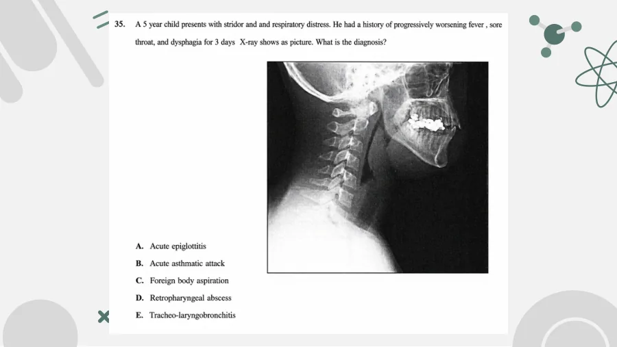
crop
ยังไม่ถูก
A. Acute epiglottitis
ยังไม่ถูก
B. Acute asthmatic attack
ยังไม่ถูก
C. Foreign body aspiration
ถูกต้อง
Fever, sore throat, dysphagia, stridor, and lateral-neck film context fit retropharyngeal abscess.
Fever, sore throat, dysphagia, stridor, and lateral-neck film context fit retropharyngeal abscess.
A15-0147A15-Q0147solution_ready
118. ผู้ป่วยชายอายุ 32 ปี มาห้องฉุกเฉินด้วยอาการคอบวม มีประวัติมีไข้ 3 วันก่อนมาไม่ผ่าตัดฝีหนองที่ข้างขวา หลังผ่าตัดเสร็จว่าคางซ้ายบวม เจ็บ กลืนลำบาก อ้าปากไม่สุด มีไข้สูง ตรวจร่างกายพบ BT 39 C, HR 90/min, BP 140/90 mmHg, RR 25/min, O2 sat room air 96%. HEENT: edema of entire upper neck and left chin, floor of mouth swelling, cannot see tonsil and uvular due to elevate tongue. Lung: no stridor or wheezing, dyspnia.
Massive bleeding through a recent tracheostomy suggests tracheo-innominate fistula; cuff hyperinflation can temporize bleeding.
A15-0149A15-Q0149solution_ready
153. A 6-week-old child arrives with a complaint of breathing fast and a cough. On examination you note the child to have no temperature elevation, a respiratory rate of 65 breaths per minutes, and her oxygen saturation to be 94%. Physical examination also is significant for rales and rhonchi. The past medical history for the child is positive for an eye discharge at 3 weeks of age, which was treated with a topical antibiotic drug. Which of the following organism is the most likely cause of this child condition?
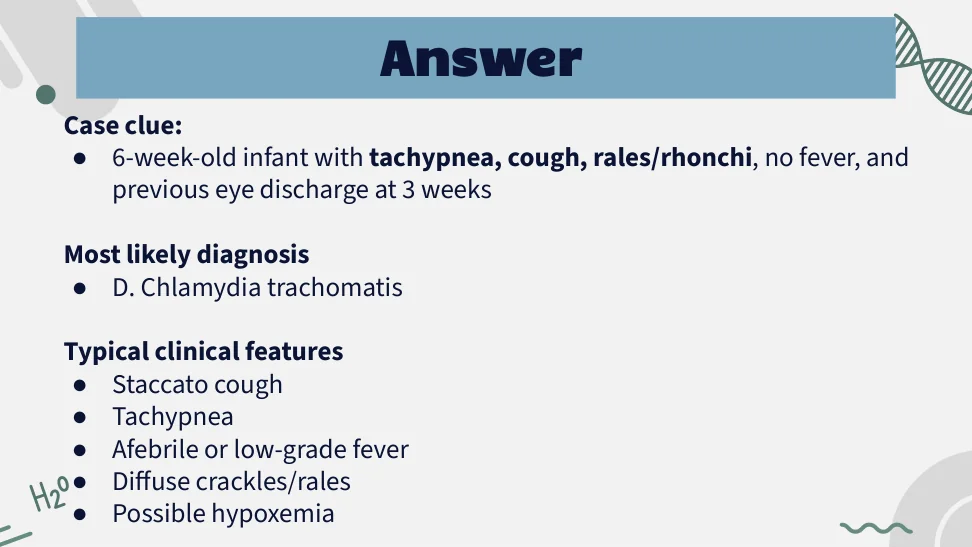
crop
ยังไม่ถูก
A. Herpes virus
ยังไม่ถูก
B. Neisseria gonorrhea
ยังไม่ถูก
C. Staphylococcus aureus
ถูกต้อง
Afebrile pneumonia at 6 weeks with prior neonatal conjunctivitis is classic for Chlamydia trachomatis.
Afebrile pneumonia at 6 weeks with prior neonatal conjunctivitis is classic for Chlamydia trachomatis.
A15-0150A15-Q0150solution_ready
175. เด็ก 4 ขวบเป็น severe croup. PE: inspiratory stridor, subcostal retraction, accessory muscle use, SpO2 75% -> พ่น adrenaline, ฉีด dexa IM แล้ว HR 155, BP90/45, RR45, SpO2 88% on oxygen supplement สักอย่างหนึ่ง What is the next appropriate management?
crop
ยังไม่ถูก
A. Needle cricothyroidotomy
ยังไม่ถูก
B. Surgical cricothyroidotomy
ยังไม่ถูก
C. Awake fibreoptic intubation
ถูกต้อง
Severe croup with persistent hypoxemia after epinephrine/steroid needs controlled airway management, ideally inhalational induction with expert support.
Severe croup with persistent hypoxemia after epinephrine/steroid needs controlled airway management, ideally inhalational induction with expert support.
A duplicate teaching slide for the same failed-awake-intubation stridor item marks conscious sedation with fiberoptic intubation as the intended answer; this also matches the epiglottitis airway principle of maintaining spontaneous ventilation when possible.
ยังไม่ถูก
D. LMA
Source: Test stridor.pdf | Page/slot: 1 | Marker: Q1
Reference: Source: Test stridor.pdf | Page/slot: 1 | Marker: Q1
ซ่อนเฉลยเปิดเฉลยSolution readyA15-0151 answer
Answer
C. Conscious sedation with fiberoptic intubation
Rationale
A duplicate teaching slide for the same failed-awake-intubation stridor item marks conscious sedation with fiberoptic intubation as the intended answer; this also matches the epiglottitis airway principle of maintaining spontaneous ventilation when possible.
A15-0152A15-Q0152solution_ready
5 year old boy presents with fever with dyspnea เด็กดูดี BT 38.5 RR 32 Spo2 96% PE: hoarse cough nasal flaring, inspiratory stridor มี retraction ถาม most approated mx:
crop
ยังไม่ถูก
A. Oral pred
ยังไม่ถูก
B. iv dexamethasone
ยังไม่ถูก
C. พ่น ventolin
ถูกต้อง
Croup with stridor at rest and retractions needs nebulized epinephrine plus steroid.
ยังไม่ถูก
E. NSS suction
Source: Test stridor.pdf | Page/slot: 5 | Marker: Q5
Reference: Source: Test stridor.pdf | Page/slot: 5 | Marker: Q5
ซ่อนเฉลยเปิดเฉลยSolution readyA15-0152 answer
Answer
D. Nebulized epinephrine
Rationale
Croup with stridor at rest and retractions needs nebulized epinephrine plus steroid.
A15-0153A15-Q0153solution_ready
เด็ก 3 ปี มาด้วยไอ barking cough หายใจมี substernal and subcostal retraction, inspiratory rhonchi O2sat drop try ett ไม่สามารถใส่ได้ ถาม next proper management
The reviewed source crop for the croup/failed ETT item has needle cricothyroidotomy marked, consistent with rescue oxygenation when intubation fails and oxygen saturation is dropping.
A15-0154A15-Q0154solution_ready
1. ผู้ป่วย Dx pneumonia with respiratory failure Mx RSI with intubation แล้วได้ capnography มาดังภาพ ถาม next step management.
crop
ยังไม่ถูก
A. Prepare for CPR
ยังไม่ถูก
B. Suction
ยังไม่ถูก
C. Test cuff leak
ถูกต้อง
The reviewed capnogram has a shark-fin obstructive contour after intubation, so ventilator management should allow longer expiration.
The reviewed waveform and source annotation indicate air trapping/auto-PEEP; increasing expiratory time is the listed management.
A15-0156A15-Q0156solution_ready
3. ผู้ป่วยชายอายุ 67 ปี U/D: COPD with AE with respiratory failure. On ETT: PCV mode Pi 15, Ti 0.9, RR 18, PEEP 5, FiO2 0.3. หลัง on ETT เหนื่อยมากขึ้น ให้กราฟ ventilator ถาม management.
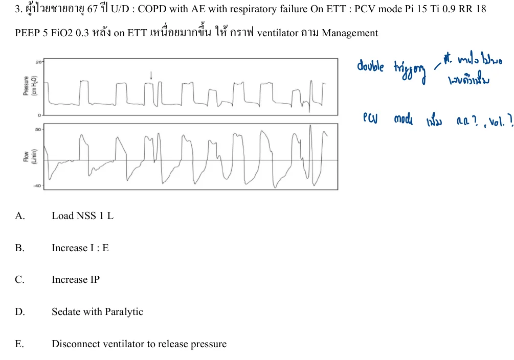
crop
ยังไม่ถูก
A. Load NSS 1 L
ถูกต้อง
The reviewed source annotation supports double triggering. A duplicate source item in B-0022 explicitly gives ventilator double triggering management as increasing inspiratory time, which corresponds best to option B here.
ยังไม่ถูก
C. Increase IP
ยังไม่ถูก
D. Sedate with paralytic
ถูกต้อง
The reviewed source annotation supports double triggering. A duplicate source item in B-0022 explicitly gives ventilator double triggering management as increasing inspiratory time, which corresponds best to option B here.
The reviewed source annotation supports double triggering. A duplicate source item in B-0022 explicitly gives ventilator double triggering management as increasing inspiratory time, which corresponds best to option B here.
A15-0157A15-Q0157solution_ready
4. EMS ออกรับผู้ป่วยชาย U/D: COPD มีอาการหายใจหอบเหนื่อย พ่นยาไปแล้วอาการไม่ดีขึ้น แพทย์ใส่ ETT ร่วมกับพ่นยาแล้ว BP drop ให้รูปมา ถาม Mx.
crop
ยังไม่ถูก
A. พ่นยาต่อ
ถูกต้อง
Intubated obstructive lung disease with sudden BP drop after ventilation suggests dynamic hyperinflation; disconnect to release trapped air.
For RSI in a compromised airway with stable hemodynamics, etomidate plus rapid-onset rocuronium is the best listed combination.
A15-0160A15-Q0160solution_ready
185. Male child 4 yr complete vaccination presented with fever, dyspnea, barking cough with previous URI symptoms. V/S stable SpO2 98% RA other PE shows inspiratory stridor, subcostal retractions with mild distress. Lung no rhonchi/wheezing, good capillary refill time. Initial Dexa 0.6 mg/kg and epinephrine nebulized were given. After initial treatment patient has no distress, no stridor heard, clearly improved. Next step Mx? 1. D/C 2. Oral prednisolone course 3. Admit observe 4. Observe 4 hr then D/C if stable 5. จําไม่ได้
Older adult with progressive anemia plus leukopenia and thrombocytopenia, macrocytosis/dimorphic RBCs, very low reticulocyte response, and no hepatosplenomegaly fits a marrow production disorder, especially myelodysplastic syndrome. The source crop also carries a handwritten cue favoring MDS/pancytopenia over B12/folate.
49. อายุ 33 ปี blunt ab FAST pos + BP drop HR เร็ว > CT เป็น splenic tear gr.3 c hemoperitoneum ไม่ผ่า พิจารณาให้ MTP เป็น PRC 4u + FFP 4u + Plt 1 u หลังให้เลือดไป 6 ชม แล้ว BT 38.6 HR 130 BP 100/60 RR32 sat 88 lung crep BLL, no edema, no JVC distension, CXR: bilat lower lung inf ถาม Mx
crop
ยังไม่ถูก
A. Furosemide
ยังไม่ถูก
B. hydrocortisone IV
ยังไม่ถูก
C. Epinephrine IM
ยังไม่ถูก
D. ลด rate ให้เลือด
ถูกต้อง
Fever, hypoxemia, bilateral infiltrates, no JVD/edema, and onset within 6 hours after transfusion is TRALI. Management is to stop transfusion and provide supportive respiratory/hemodynamic care; diuretics are for volume overload/TACO, not TRALI.
Fever, hypoxemia, bilateral infiltrates, no JVD/edema, and onset within 6 hours after transfusion is TRALI. Management is to stop transfusion and provide supportive respiratory/hemodynamic care; diuretics are for volume overload/TACO, not TRALI.
Q112. A 50-year-old man presents to the emergency department with shortness of breath. He is alert and oriented and hemodynamically stable. You have decided the patient has decision-making capacity. In which of the following scenarios may informed consent be waived for further evaluation and treatment?
ยังไม่ถูก
A. Chest tube insertion for a pneumothorax
ถูกต้อง
B. Isolation and treatment for active pulmonary tuberculosis in a homeless man
ยังไม่ถูก
C. Observation for serial troponin testing in a prisoner with known coronary artery disease
ยังไม่ถูก
D. Transfusion of blood for anemia in a Jehovah’s Witness
Source: Old special HTML: A09 | Page/slot: old-special | Marker: a09-mcgraw-board-review-q112
Reference: Source: Old special HTML: A09 | Page/slot: old-special | Marker: a09-mcgraw-board-review-q112
- Merck Manual Professional, SCID: diagnosis uses lymphopenia/very low T cells; by about 6 months infants develop pneumonia and diarrhea; lymphoid tissue may be decreased or absent. https://www.merckmanuals.com/professional/immunology-allergic-disorders/immunodeficiency-disorders/severe-combined-immunodeficiency-scid - Merck Manual Professional, X-linked agammaglobulinemia: causes absent/very low B cells and very small tonsils, but diagnosis is low immunoglobulins plus absent B cells rather than marked total lymphopenia. https://www.merckmanuals.com/professional/immunology-allergic-disorders/immunodeficiency-disorders/x-linked-agammaglobulinemia
A15-0169A15-Q0169solution_ready
Male 11 yr present with periorbital and facial edema Hx of 5 yr pta swelling of hand and feet duration 3 day each remission by home medicine FHx of mother having this symptom & his elder brother die of respiratory distress The patient feel abdominal pain but no rash. What is the most etiology?
crop
ถูกต้อง
Recurrent familial angioedema without urticaria and abdominal pain is hereditary angioedema mediated by bradykinin.
Recurrent familial angioedema without urticaria and abdominal pain is hereditary angioedema mediated by bradykinin.
A15-0170A15-Q0170solution_ready
เด็กหนัก 20 กก. ถูกงูแมวเซากัด หลังจากให้ Antivenom ไป 15 นาที มีอาการหายใจลำบาก PE: Skin: Wheal and flare, Lungs: Wheezing at both lungs หลังจากหยุดให้ Antivenom และให้ On O2 cannula แล้ว Most appropriate Mx?
crop
ถูกต้อง
Anaphylaxis in a 20 kg child requires IM epinephrine 0.01 mg/kg of 1:1000, which is 0.2 mL.
ยังไม่ถูก
B. Epinephrine (1:10000) 0.2 ml IM
ยังไม่ถูก
C. Epinephrine (1:1000) 0.2 ml IV
ยังไม่ถูก
D. Epinephrine (1:10000) 0.2 ml IV
ยังไม่ถูก
E. Epinephrine 12 ml + NSS up to 100 ml iv drip rate 1 ml/hr
Source: Test for Snake bite ,.pdf | Page/slot: 2 | Marker: Page 2 Question
Reference: Source: Test for Snake bite ,.pdf | Page/slot: 2 | Marker: Page 2 Question
ซ่อนเฉลยเปิดเฉลยSolution readyA15-0170 answer
Answer
A. Epinephrine (1:1000) 0.2 ml IM
Rationale
Anaphylaxis in a 20 kg child requires IM epinephrine 0.01 mg/kg of 1:1000, which is 0.2 mL.
A15-0171A15-Q0171solution_ready
Q61. A 55-year-old man with human immunodeficiency virus infection presents to the emergency department with 2 weeks of hemoptysis, night sweats, prolonged fevers, weight loss, and anorexia. Which of the follow ing statements regarding this condition is TRUE?
ยังไม่ถูก
A. Approximately 50% of new cases in the United States occur in HIV-infected persons.
ยังไม่ถูก
B. Definitive diagnosis is commonly made through positive blood cultures.
ยังไม่ถูก
C. Frequently occurs in patients with CD4+ T-cell counts less than 100 cells/mm3.
ถูกต้อง
D. Negative purified protein derivative skin test results are common among HIV patients.
Source: Old special HTML: A09 | Page/slot: old-special | Marker: a09-mcgraw-board-review-q61
Reference: Source: Old special HTML: A09 | Page/slot: old-special | Marker: a09-mcgraw-board-review-q61
HIV with CD4 80, SpO2 90% on room air, and diffuse interstitial infiltrates suggests hypoxemic PCP; TMP-SMX is absent from the visible choices, so adjunct corticosteroid is the intended listed treatment.
A15-0177A15-Q0177solution_ready
16. Male 60 years old. No U/D. มาด้วย weakness มี diplopia ตอนอ่านหนังสือ, ptosis เป็นมากระหว่างวัน อาการดีขึ้นหลังตื่นนอน V/S stable. Ptosis left palpebrae. Lung: accessory muscle use, retraction. Drowsiness. What is the best management?
crop
ยังไม่ถูก
A. Edophonium
ยังไม่ถูก
B. Physostigmine
ยังไม่ถูก
C. Dexamethasone
ยังไม่ถูก
D. Succinylcholine
ถูกต้อง
Fluctuating ptosis/diplopia with respiratory muscle involvement and drowsiness is myasthenic crisis. IVIG is appropriate disease-directed therapy after airway/ventilatory support.
Fluctuating ptosis/diplopia with respiratory muscle involvement and drowsiness is myasthenic crisis. IVIG is appropriate disease-directed therapy after airway/ventilatory support.
89. female 25 yr, no u/d, after use toilet cleaner with bleach, got episode of syncope, HR 120, BP stable, RR 24, spO2 91%, PE: injected conjunctiva, flushing on her face, most appropriate Mx?
crop
ยังไม่ถูก
A. NB 3%NaCl
ยังไม่ถูก
B. NB adrenaline
ถูกต้อง
Bleach/toilet-cleaner exposure suggests chlorine/chloramine irritant gas. Nebulized sodium bicarbonate is a recognized symptomatic treatment for chlorine inhalation injury in this option set.
Bleach/toilet-cleaner exposure suggests chlorine/chloramine irritant gas. Nebulized sodium bicarbonate is a recognized symptomatic treatment for chlorine inhalation injury in this option set.
Paroxysmal headache, palpitations, sweating, severe hypertension, tremor, and negative drug screen suggest pheochromocytoma; alpha blockade is required before beta blockade.
Female 32 y, postpartum 2wk, Grave's disease มาด้วย agitate+palpitation and agitation 1 day, nausea and vomiting 2 episode temp 37.9, pulse 110/min, BP 160/110 mmHg mild icteric sclera, heart regular, fine crepitation both lower lung, pitting edema 1+ Initial management
crop
ยังไม่ถูก
A. 10% MgSO4
ยังไม่ถูก
B. Ceftriaxone
ยังไม่ถูก
C. Methimazole
ยังไม่ถูก
D. Lugol solution
ถูกต้อง
Postpartum Graves with agitation, palpitations, vomiting, hypertension, pulmonary congestion, and hepatic involvement is concerning for thyroid storm/severe thyrotoxicosis. Initial antithyroid therapy should be a thionamide; PTU is favored in thyroid storm because it also decreases peripheral T4-to-T3 conversion. Iodine/Lugol is given after thionamide, not first.
Postpartum Graves with agitation, palpitations, vomiting, hypertension, pulmonary congestion, and hepatic involvement is concerning for thyroid storm/severe thyrotoxicosis. Initial antithyroid therapy should be a thionamide; PTU is favored in thyroid storm because it also decreases peripheral T4-to-T3 conversion. Iodine/Lugol is given after thionamide, not first.
176. Female 25 years old คลอดมาที่บ้านเอาเด็กมา ER -> Estimate GA ~ 32 wk, male preterm decrease tone, เหนื่อย retraction. BP 45/25 HR 40, SpO2 75%. Central + peripheral cyanosis. Lung - bilateral crepitation, subcostal retraction + accessory muscle use. เช็ดตัว, warming, positioning open airway แล้ว + PPV ไป 30 sec ยัง HR 80, SpO2 80% อยู่ What is the best next intervention to improve oxygenation?
crop
ถูกต้อง
After initial warming/positioning and 30 seconds of PPV, HR has improved only to 80 and oxygenation remains low. Among the available corrective options, increasing inspiratory pressure is the best next step to improve effective ventilation/oxygenation if breaths are inadequate.
After initial warming/positioning and 30 seconds of PPV, HR has improved only to 80 and oxygenation remains low. Among the available corrective options, increasing inspiratory pressure is the best next step to improve effective ventilation/oxygenation if breaths are inadequate.
A 50-year-old man complained with severe vomiting for 2 days and today he developed sudden chest pain in the middle chest. He had no fever nor diarrhea. He had alcohol dependence and had hypertension as underlying disease. Physical examination revealed BT 36.8 C, HR 120/min, RR 24/min, BP 180/90 mmHg, oxygen saturation 95%; heart - regular tachycardia, normal S1S2, no murmur; abdomen - soft, tender at epigastrium. ECG showed sinus tachycardia without ST-T wave abnormalities. What is the most likely diagnosis? A. Pancreatitis B. Aortic dissection C. Pulmonary embolism D. Esophageal perforation E. Spontaneous pneumomediastinum
Severe vomiting followed by sudden chest pain after alcohol dependence is Boerhaave syndrome.
A15-0187A15-Q0187solution_ready
A 29-year-old male with a past medical history of Goodpasture's Syndrome presents with shortness of breath. He is in acute respiratory distress and is coughing up blood. He is afebrile with a heart rate of 105, blood pressure of 105/50, respiratory rate of 30, and oxygen saturation of 88% on room air. A chest radiograph reveals hilar pulmonary infiltrates. In addition to airway management, the treatment in the emergency department for this patient includes which of the following?\nA. Heparin\nB. Enoxaparin\nC. Methylprednisolone\nD. Fresh frozen plasma\nE. Pulmonary embolization
Initial EMS management of opioid respiratory failure is airway opening and assisted ventilation before/with naloxone.
A15-0192A15-Q0192solution_ready
25 yo female was found AOC. Advance team ไปรับ พบว่า v/s BT 37, HR 60, BP 90/50, RR 6, Sat 90% RA. What is appropriate next step?\nA. Intubation\nB. Give naloxone + ไปโรงพยาบาล\nC. Assist bag-valve-mask\nD. .\nE. Oxygen 10 LPM with non
Altered consciousness with RR 6 and hypoxemia is primarily a ventilation problem. Assist ventilation with BVM is the immediate next step before relying on oxygen alone or delayed antidote effect.
Smoke inhalation with severe lactic acidosis suggests cyanide poisoning; hydroxocobalamin is preferred.
A15-0196A15-Q0196solution_ready
161. Male 35 yr, was stabbed by knife at right anterolateral of neck (middle level) V/S stable good consciousness but have pulsatile hematoma around wound. Cant palpable pulse of right carotid artery. normal pulse of left carotid artery. no dyspnea or stridor. What is the next management for this patient?
crop
ยังไม่ถูก
A. CTA
ยังไม่ถูก
B. Direct compression
ถูกต้อง
Pulsatile neck hematoma and absent carotid pulse are hard signs of vascular injury.
Deterioration after occlusive dressing suggests tension physiology; if release is not listed, needle decompression is the immediate option.
A15-0198A15-Q0198solution_ready
6. Female 30 yr ให้ประวัติ motor vehicle accident มีอาการเจ็บหน้าอกซ้าย มาถึงรพ VS BT: 370C, BP 110/70 mmHg, HR 110 bpm, RR 28 bpm, SpO2 RA 90%. PE: lung decreased breath sound left lung, no crepitation ให้รูป barcode sign (u/s) >> what is management?
crop
ยังไม่ถูก
A. Intubation
ยังไม่ถูก
B. Needle cricothyroidotomy
ยังไม่ถูก
C. Needle thoracocentesis
ถูกต้อง
Traumatic pneumothorax on ultrasound in a symptomatic patient is managed with tube thoracostomy.
After failed orotracheal intubation in an infant with facial trauma, LMA is a rescue bridge if oxygenation is possible.
A15-0201A15-Q0201solution_ready
Blunt neck injury มี subcutaneous emphysema, difficulty breathing, v/s stable the most appropriate airway management A) Emergency tracheostomy B) Sx cricothyroidotomy C) direct laryngoscope intubation D) flexible endoscopic intubation E) Video laryngoscope intubation
Duplicate stable blunt neck injury with subcutaneous emphysema/dyspnea item.
A15-0202A15-Q0202solution_ready
Ecchymosis chest wall with generalized cutaneous emphysema, trachea in midline. BP 70/40, RR 26, BT 37.2, SpO2 96 on mask with bag 10 LPM. Heart and lung can not audible due to subcutaneous emphysema. Next step
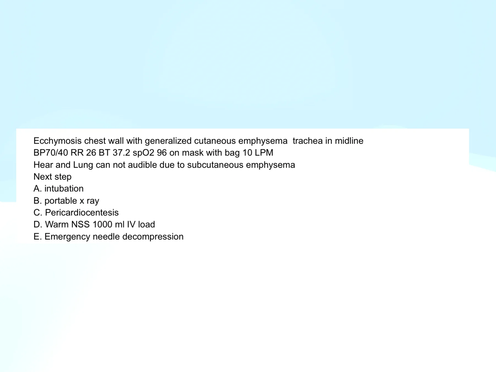
crop
ยังไม่ถูก
A. intubation
ยังไม่ถูก
B. portable x ray
ยังไม่ถูก
C. Pericardiocentesis
ยังไม่ถูก
D. Warm NSS 1000 ml IV load
ถูกต้อง
Shock with severe subcutaneous emphysema and inaudible chest exam is treated as possible tension pneumothorax.
Shock with severe subcutaneous emphysema and inaudible chest exam is treated as possible tension pneumothorax.
A15-0203A15-Q0203solution_ready
130. 27 YOM motorcycle accident มี penetrating wound 4th ICS, MCL ข้างขวา EMS ทํา three side occlusive dressing มาแล้ว มาถึง ER เป็น Tension pneumothorax ข้างขวา what is the appropriate next step? IV fluid Needle thoracocentesis ICD ETT เปิดแผล remove clot
Tension pneumothorax after occlusive dressing requires immediate decompression.
A15-0204A15-Q0204solution_ready
ผู้ป่วย หนัก 50 kg pneumonia resp fail on ventilator PCV mode IP 17 RR 14 Fio2 0.5 Ti 1 sec PEEP 5 monitor TV 400 MV 7.2 เจาะ ABG pH 7.2 PCO2 35 PO2 100กว่าๆ Sat 95% HCO3 12 ให้ปรับ ventilator
crop
ยังไม่ถูก
A. เพิ่ม IP
ถูกต้อง
The ABG shows metabolic acidosis with inadequate respiratory compensation: expected PCO2 is about 26 mmHg, but measured PCO2 is 35. Increasing minute ventilation by raising RR helps lower PaCO2.
The ABG shows metabolic acidosis with inadequate respiratory compensation: expected PCO2 is about 26 mmHg, but measured PCO2 is 35. Increasing minute ventilation by raising RR helps lower PaCO2.
Generalized subcutaneous emphysema after airway manipulation raises concern for airway or esophageal injury. CT chest and neck is the best diagnostic investigation among the choices.
Generalized subcutaneous emphysema after airway manipulation raises concern for airway or esophageal injury. CT chest and neck is the best diagnostic investigation among the choices.
Male 60 yr old, massive hemoptysis, bp 70/40, HR 130, RR 40, SpO2 88% -> ETT NSS 500 ml iv FFP 4 u > BP 80/50 HR 130 SpO2 96%, cxr opacity Rt lung. Appropriate mx??
crop
ยังไม่ถูก
A. one lung intubation
ยังไม่ถูก
B. rigid bronchoscope
ยังไม่ถูก
C. rt lung lobectomy
ยังไม่ถูก
D. hypotensive resuscitation
ถูกต้อง
Massive hemoptysis with right-lung opacity after airway stabilization needs definitive bleeding control. Bronchial artery embolization is the appropriate definitive management when available.
Massive hemoptysis with right-lung opacity after airway stabilization needs definitive bleeding control. Bronchial artery embolization is the appropriate definitive management when available.
30. 55 YOM old TB มาด้วย massive hemoptysis > respiratory failure, On ETT suction ได้ fresh blood 300 ml What is most effective management? 1. transmine 2. Emer thoracotomy 3. Emer bronchoscopy 4.... 5. embolization
Massive hemoptysis from old TB is commonly from bronchial artery bleeding. Bronchial artery embolization is the most effective definitive control option among the listed choices.
75. male farmer U/D DM dyspnea. BT 38 BP 70/50 PR 120 lung crepitaOon ETT and IV resus แล้ว Most appropriate ATB?
crop
ยังไม่ถูก
A. Ceftri+azithro
ถูกต้อง
A Thai farmer with diabetes, septic shock, and pneumonia should be covered for melioidosis. Ceftazidime is the classic initial intensive-phase antibiotic.
A Thai farmer with diabetes, septic shock, and pneumonia should be covered for melioidosis. Ceftazidime is the classic initial intensive-phase antibiotic.
111. คุณเป็น medical director มีแจ้งเหตุเป็น bls ออกรับ เป็นผู้ป่วยชายอายุ 23 ปี ประสบเหตุโดนยิง ตอนนี้ คนโดนยิง - ตำรวจจับแล้ว ไปพบ grasping, no pulse อาสา CPR อยู่15นาที ตอนนี้คุณไปถึง scene ผู้ป่วยไม่มี pulse แต่ยังไม่มี rigor / หรือ livor mortis แต่พบแผลถูกยิงแค่ที่ หน้าอกด้านซ้ายแค่ข้างเดียว ถามว่าท่านจะทำอะไรต่อ
crop
ยังไม่ถูก
A. Terminated Resuscitation
ยังไม่ถูก
B. CPR จนครบ30นาที
ถูกต้อง
Traumatic arrest after left chest gunshot has a reversible cause of tension pneumothorax. Immediate left needle decompression followed by ongoing CPR is the best listed action.
ยังไม่ถูก
D. Continue CPR ร่วมกับเคลื่อนย้ายไปส่งที่โรงพยาบาลด้วย
Traumatic arrest after left chest gunshot has a reversible cause of tension pneumothorax. Immediate left needle decompression followed by ongoing CPR is the best listed action.
The ultrasound source page includes the embedded answer “เลื่อน ETT ขึ้น 2cm,” consistent with mainstem/deep endotracheal tube position causing asymmetric lung findings.
Male 60 yr, present recurrent hemoptysis 500 ml, HR 135, BP 94/52, Osat 90% (RA). Most appropriate next step management? Film CXR: if LUL\nA. RSI\nB. positive pressure ventilation\nC. emergency thoracotomy\nD. จับผู้ป่วยตะแคงซ้ายลง หัวสูง\nE. intubate to left main bronchus
Massive hemoptysis from the left upper lobe should be positioned bleeding side down with head elevated to protect the contralateral lung before definitive airway/intervention.
Penetrating traumatic arrest with decreased breath sounds requires immediate treatment of possible tension pneumothorax. Bilateral needle decompression is the highest-priority reversible intervention listed.
Penetrating traumatic arrest with decreased breath sounds requires immediate treatment of possible tension pneumothorax. Bilateral needle decompression is the highest-priority reversible intervention listed.
151. Severe trauma ที่หัวและหน้า BP 140/80, HR 118, sat 84%RA, GCS 12 เป็น unstable fracture ที่หน้าและ bleed ปริมาณมากในปาก สักพัก GCS เหลือ 9 ได้ preoxygenation และ ใส่ ETT เป็น direct fail *2 และ LMA ใส่แล้ว ไม่สามารถ ventilate ได้ กลับมา try bag mask c bag แล้วไม่สามารถ ventilate ได้ ให้ Mx อะไร
crop
ยังไม่ถูก
A. On tracheostomy
ยังไม่ถูก
B. Videolaryngoscope
ยังไม่ถูก
C. Blind nasal intubation
ยังไม่ถูก
D. Needle crico
ถูกต้อง
This is cannot-intubate/cannot-oxygenate after failed direct laryngoscopy, failed LMA ventilation, and failed bag-mask ventilation. Surgical cricothyrotomy is indicated.
This is cannot-intubate/cannot-oxygenate after failed direct laryngoscopy, failed LMA ventilation, and failed bag-mask ventilation. Surgical cricothyrotomy is indicated.
155. 32 ปี ไข้ ไอ หอบ v/s bp 80/60 sat 88 pulse 140 rr 40 lung crepitation หลังใส่ ett มี pink frothy sputum echo EF 15 ถาม Mx
crop
ถูกต้อง
Fever/cough with shock, pulmonary edema, and EF 15% suggests cardiogenic shock from myocarditis/acute cardiomyopathy. Dobutamine is the listed inotrope for low-output shock.
Fever/cough with shock, pulmonary edema, and EF 15% suggests cardiogenic shock from myocarditis/acute cardiomyopathy. Dobutamine is the listed inotrope for low-output shock.
To lower PaCO2 from 50 to about 40, minute ventilation must increase by roughly 25%. Increasing tidal volume from 500 to 600 mL is the closest listed adjustment.
To lower PaCO2 from 50 to about 40, minute ventilation must increase by roughly 25%. Increasing tidal volume from 500 to 600 mL is the closest listed adjustment.
A tracheostomy patient with secretion and inability to pass suction catheter likely has an obstructed inner cannula. Remove the inner tube/cannula first.
Q2. A 48-year-old woman presents in respiratory distress with myasthenia crisis. She is intubated using RSI with etomidate and succinylcholine. After medication administration, she goes into cardiac arrest and expires despite resuscitation. Which adverse medication reaction from the RSI medications most likely resulted in cardiac arrest?
McGraw Chapter 2, source page image p.20
ถูกต้อง
A. Adrenal insufficiency
ถูกต้อง
B. Hyperkalemia
ถูกต้อง
C. Hypotension
ถูกต้อง
D. Vomiting with resulting massive aspiration
Source: Old special HTML: A04 | Page/slot: old-special | Marker: a04-potassium-ecg-electrolytes-q2
Reference: Source: Old special HTML: A04 | Page/slot: old-special | Marker: a04-potassium-ecg-electrolytes-q2
ซ่อนเฉลยเปิดเฉลยSolution readyA15-0222 answer
Answer
Answer not imported.
Rationale
Rationale not imported.
References
- Source note: Extra A04 potassium/electrolyte source item routed from McGraw Chapter 2 page 20. - Original reference: Reference: Source: McGraw Chapter 2: Resuscitation | p.20
A15-0223A15-Q0223solution_ready
Q7. A 72-year-old man complains of purulent cough and shortness of breath that has been progressive over the past several weeks despite antibiotics prescribed by his primary care physician. He is in obvious respiratory distress and chest radiograph demonstrates opacification of the right lower lung fields with loss of the costophrenic angle and a notable meniscus. What is the MOST APPROPRIATE initial step in management?
ยังไม่ถูก
A. Administration of intrapleural fibrinolytics and antibiotics
ยังไม่ถูก
B. Echocardiogram, triple blood cultures, and antibiotics
ยังไม่ถูก
C. Nebulized beta-agonists, intravenous steroids, and positive pressure ventilation
ถูกต้อง
D. Thoracentesis with subsequent thoracostomy and antibiotics
Source: Old special HTML: A09 | Page/slot: old-special | Marker: a09-mcgraw-board-review-q7
Reference: Source: Old special HTML: A09 | Page/slot: old-special | Marker: a09-mcgraw-board-review-q7
Q1. A 58-year-old male with diabetes mellitus and chronic obstructive pulmonary disease (COPD) presents to the emergency department with progressive dyspnea, pleuritic chest pain, and fever for five days. He was recently hospitalized for community-acquired pneumonia but discharged without completing his antibiotic course. On examination, he is febrile (38.9°C), tachycardic (HR 118 bpm), and tachypneic (RR 26/min). Breath sounds are diminished on the right lower lung field with dullness to percussion. Investigations: Chest X-ray: Large right-sided pleural effusion with mediastinal shift. Diagnostic Thoracentesis: Appearance: Purulent, pH: 6.8, Glucose: 28 mg/dL, LDH: 2,300 U/L, Gram stain: Gram-positive cocci. Which of the following is the most appropriate next step in management?
Q2. ชายอายุ 55 ปี มีประวัติ old TB มาด้วย massive hemoptysis จนเกิด respiratory failure. ใส่ ETT แล้ว suction ได้ fresh blood 300 mL. What is the most effective management?
Source: Old special HTML: A09 | Page/slot: old-special | Marker: a09-tb-tuberculosis-complications-q2
Reference: Source: Old special HTML: A09 | Page/slot: old-special | Marker: a09-tb-tuberculosis-complications-q2
ซ่อนเฉลยเปิดเฉลยSolution readyA15-0225 answer
Answer
C
Rationale
Rationale not imported.
References
- Source note: Option D was not readable from the provided source image. - Original reference: Reference: Source: user-provided old-exam image in chat. Teaching reference: Tintinalli 9th ed. Ch.63 p.435 Figure 63-2 algorithm for massive hemoptysis.
A15-0226A15-Q0226solution_ready
Q3. ชายอายุ 35 ปี มี progressive sore throat 6 ชั่วโมง. V/S BT 39.5°C, RR 28/min, O2 sat RA 92%, BP และ HR stable. ตรวจพบ muffled voice, trismus, drooling, anterior neck swelling; ส่องคอปกติ. RS: inspiratory stridor, no wheeze; other systems unremarkable. แพทย์วางแผนใส่ ETT due to compromised airway. RSI regimen ที่เหมาะสมที่สุดคือข้อใด?
Q4. เด็ก 4 ขวบเป็น severe croup. PE: inspiratory stridor, subcostal retraction, accessory muscle use, SpO2 75%. หลังพ่น adrenaline และฉีด dexamethasone IM แล้ว HR 155/min, BP 90/45 mmHg, RR 45/min, SpO2 88% on oxygen supplement. What is the next management?
ยังไม่ถูก
A. Needle cricothyroidotomy
ยังไม่ถูก
B. Surgical cricothyroidotomy
ยังไม่ถูก
C. Awake fibreoptic intubation
ถูกต้อง
D. Intubate with inhaled anesthesia
ยังไม่ถูก
E. Video laryngoscopy with RSI
Source: Old special HTML: A09 | Page/slot: old-special | Marker: ent-upper-airway-otitis-deep-neck-infection-q4
Reference: Source: Old special HTML: A09 | Page/slot: old-special | Marker: ent-upper-airway-otitis-deep-neck-infection-q4
ซ่อนเฉลยเปิดเฉลยSolution readyA15-0227 answer
Answer
D
Rationale
Rationale not imported.
References
- Source note: Source file: MCQ 2025 แยกหัวข้อ.pdf - Original reference: Reference: Source: MCQ 2025 แยกหัวข้อ.pdf | p.98-117 | recovered from MIXED bucket after infectious review.
A15-0228A15-Q0228solution_ready
Q26. 17. คนติดอยู่ในบ้านไฟไหม้ ที่บ้าน furniture ไหม้ Primary survey: inhalation injury (carbonaceous sputum) V/S BT 37.8 BP 110/70 PR 120 Sat 98% RR 30 ให้ lab ABG pH 7.1 Lactate 11 SpO2 99% (No sat gap) ทีม EMS ใส่ ETT มาแล้วเข้าดี ถามว่าจะให้ยาอะไร
MCQ 2025 รวมไม่แยกหัวข้อ.pdf, p.14
ถูกต้อง
A. Sodium nitrite
ถูกต้อง
B. Sodium thiosulfate
ถูกต้อง
C. Hydroxocobalamin
ถูกต้อง
D. NaHCO3
Source: Old special HTML: A16 | Page/slot: old-special | Marker: a16-gas-and-inhalational-q26
Reference: Source: Old special HTML: A16 | Page/slot: old-special | Marker: a16-gas-and-inhalational-q26
ซ่อนเฉลยเปิดเฉลยSolution readyA15-0228 answer
Answer
Answer not imported.
Rationale
Rationale not imported.
References
- Source note: Source image preserved from MCQ 2025 รวมไม่แยกหัวข้อ.pdf p.14. No answer/lesson in this collection pass. - Original reference: Reference: Source: MCQ 2025 รวมไม่แยกหัวข้อ.pdf | p.14 | full source page rendered; answer intentionally not imported.
Q44. 130. 27 YOM motorcycle accident มี penetrating wound 4th ICS, MCL ข้างขวา EMS ทำ three side occlusive dressing มาแล้ว มาถึง ER เป็น tension pneumothorax ข้างขวา what is the appropriate next step?
MCQ 2025 รวมไม่แยกหัวข้อ.pdf, p.112
ถูกต้อง
A. IV fluid
ถูกต้อง
B. Needle thoracocentesis
ถูกต้อง
C. ICD
ถูกต้อง
D. ETT
ถูกต้อง
E. เปิดแผล remove clot
Source: Old special HTML: C | Page/slot: old-special | Marker: c-prehospital-care-practice-q44
Reference: Source: Old special HTML: C | Page/slot: old-special | Marker: c-prehospital-care-practice-q44
ซ่อนเฉลยเปิดเฉลยSolution readyA15-0231 answer
Answer
Answer not imported.
Rationale
Rationale not imported.
References
- Source note: Source image preserved from MCQ 2025 รวมไม่แยกหัวข้อ.pdf p.112. No answer/lesson in this collection pass. - Original reference: Reference: Source: MCQ 2025 รวมไม่แยกหัวข้อ.pdf | p.112 | full source page rendered; answer intentionally not imported.
A15-0232A15-Q0232solution_ready
Q46. 104. ออกรับผู้ป่วยถูกแทงที่ left chest wall Dx open pneumothorax ทำ occlusive dressing ระหว่างทางกลับโรงพยาบาล ผู้ป่วยเหนื่อย หายใจเร็ว RR 44 ทำอะไร
MCQ 2566 combined.pdf, p.17
ถูกต้อง
A. ICD
ถูกต้อง
B. needle thoracostomy
ถูกต้อง
C. cricothyroidotomy
ถูกต้อง
D. intubation
ถูกต้อง
E. release occlusive dressing
Source: Old special HTML: C | Page/slot: old-special | Marker: c-prehospital-care-practice-q46
Reference: Source: Old special HTML: C | Page/slot: old-special | Marker: c-prehospital-care-practice-q46
ซ่อนเฉลยเปิดเฉลยSolution readyA15-0232 answer
Answer
Answer not imported.
Rationale
Rationale not imported.
References
- Source note: Source image preserved from MCQ 2566 combined.pdf p.17. No answer/lesson in this collection pass. - Original reference: Reference: Source: MCQ 2566 combined.pdf | p.17 | full source page rendered; answer intentionally not imported.
Q32. 124. ออกเหตุ EMS ชาย 40 ปี ไปพบว่าหมดสติ ตรวจร่างกายเบื้องต้นที่ scene BP 80/40 RR 8 HR 60 score E1V1M2 pupil 3 mm SRTLBE SpO2 90% จะทำอะไรก่อน
รวมข้อสอบ-board-2562-CHULA.pdf, p.30
ถูกต้อง
A. Naloxone
ถูกต้อง
B. Definite airway
ถูกต้อง
C. Oxygen mask with bag 11 LPM
ถูกต้อง
D. Bag valve mask ventilation
ถูกต้อง
E. Observe
Source: Old special HTML: C | Page/slot: old-special | Marker: c-prehospital-transport-and-triage-q32
Reference: Source: Old special HTML: C | Page/slot: old-special | Marker: c-prehospital-transport-and-triage-q32
ซ่อนเฉลยเปิดเฉลยSolution readyA15-0234 answer
Answer
Answer not imported.
Rationale
Rationale not imported.
References
- Source note: Source image preserved from รวมข้อสอบ-board-2562-CHULA.pdf p.30. No answer/lesson in this collection pass. - Original reference: Reference: Source: รวมข้อสอบ-board-2562-CHULA.pdf | p.30 | full source page rendered; answer intentionally not imported.
Shock plus extremity wound bleeding requires immediate hemorrhage control; tourniquet is appropriate for severe limb bleeding.
A15-0238A15-Q0238solution_ready
Q21. A 3-year-old girl discovers a bottle of liquid in her parents’ bedroom. She takes a sip of the solution and begins to vomit. Her parents activate EMS, who note agitation followed by lethargy. She arrives in the emer gency department bradycardic and hypotensive, with evidence of bronchorrhea and respiratory distress. She suffers a generalized tonic-clonic seizure shortly after arrival. The patient’s parents identified the bot tle as containing liquid nicotine, from which they fill their electronic cigarettes. Administration of atropine will help reverse which of the patient’s symptoms?
McGraw Chapter 13: Toxicologic Disorders, p.178
ถูกต้อง
A. Bradycardia
ถูกต้อง
B. Diaphragm paralysis
ถูกต้อง
C. Hypotension
ถูกต้อง
D. Wheezing
Source: Old special HTML: A16 | Page/slot: old-special | Marker: a16-mcgraw-board-review-q21
Reference: Source: Old special HTML: A16 | Page/slot: old-special | Marker: a16-mcgraw-board-review-q21
In an intubated trauma patient, sudden ETCO2 drop from 35 to 12 with no unilateral decreased breath sounds suggests a sharp fall in pulmonary blood flow/cardiac output rather than tube displacement or pneumothorax. With hypotension and tachycardia, hypovolemic shock is the best choice.
Q9. Male 38 yrs, underlying chronic alcohol drinking and DM on metformin 2x2, presents with dyspnea after heavy alcohol drinking for 2 days. At ER: good consciousness, tachypnea, no other remarkable PE. Lab: BS 150, ABG pH 7.25, PCO2 25, PO2 130, HCO3 10, beta-OH 12, urine ketone negative. Diagnosis?
Test_for_AKA.pdf, source page image p.1
ถูกต้อง
A. Methanol intoxication
ถูกต้อง
B. DKA
ถูกต้อง
C. Alcoholic ketoacidosis
ถูกต้อง
D. Euglycemic DKA
ถูกต้อง
E. MALA
Source: Old special HTML: A04 | Page/slot: old-special | Marker: a04-glucose-diabetes-and-dka-q9
Reference: Source: Old special HTML: A04 | Page/slot: old-special | Marker: a04-glucose-diabetes-and-dka-q9
ซ่อนเฉลยเปิดเฉลยSolution readyA15-0240 answer
Answer
Answer not imported.
Rationale
Rationale not imported.
References
- Source note: Extra A04 metabolic acidosis source item routed from Test_for_AKA page 1. - Original reference: Reference: Source: Test_for_AKA.pdf | p.1
A15-0241A15-Q0241solution_ready
Q4. A 58-year-old male presents to the Emergency Department (ED) with chest discomfort for the past 3 hours. He complains of orthopnea and shortness of breath. He has a history of hypertension and end-stage renal disease. His vital signs are BP 100/60 mmHg, RR 24/min, T 37 c, P 115 bpm His ECG shows below. What is the definitive management for this patient?
Intraining 2569 Q85 source image
ยังไม่ถูก
A. Administer dual antiplatelet therapy (aspirin and clopidogrel) and start a heparin infusion, then perform urgent coronary angiography.
ยังไม่ถูก
B. Administer calcium gluconate, insulin plus glucose, sodium bicarbonate and kayexalate.
ยังไม่ถูก
C. Give sublingual nitroglycerin and morphine, then obtain serial ECGs
ยังไม่ถูก
D. Immediate percutaneous coronary intervention (PCI)
ถูกต้อง
E. Immediate hemodialysis
Source: Old special HTML: A14 | Page/slot: old-special | Marker: a14-renal-aki-dialysis-and-electrolyte-q4
Reference: Source: Old special HTML: A14 | Page/slot: old-special | Marker: a14-renal-aki-dialysis-and-electrolyte-q4
Q45. Male 38 yrs U/D: Chronic alcohol drinking, DM on MFM 2x2, dyspnea after heavy alcohol drinking for 2 day. At ER PE: good consciousness, tachypnea (no other PE), Lab: BS 150, ABG pH 7.25, PCO2 25, PO2 130, HCO3 10, b-OH 12, urine ketone negative. Diagnosis?
Test_for_AKA.pdf, p.1
ถูกต้อง
A. Methanol intoxication
ถูกต้อง
B. DKA
ถูกต้อง
C. AKA
ถูกต้อง
D. Euglycemic DKA
ถูกต้อง
E. MALA
Source: Old special HTML: A16 | Page/slot: old-special | Marker: a16-alcohol-toxic-alcohol-and-aka-q45
Reference: Source: Old special HTML: A16 | Page/slot: old-special | Marker: a16-alcohol-toxic-alcohol-and-aka-q45
ซ่อนเฉลยเปิดเฉลยSolution readyA15-0242 answer
Answer
Answer not imported.
Rationale
Rationale not imported.
References
- Source note: Source image preserved from Test_for_AKA.pdf p.1. No answer/lesson in this collection pass. - Original reference: Reference: Source: Test_for_AKA.pdf | p.1 | full source page rendered; answer intentionally not imported.
Source: Old special HTML: A16 | Page/slot: old-special | Marker: a16-gas-and-inhalational-q25
Reference: Source: Old special HTML: A16 | Page/slot: old-special | Marker: a16-gas-and-inhalational-q25
ซ่อนเฉลยเปิดเฉลยSolution readyA15-0244 answer
Answer
Answer not imported.
Rationale
Rationale not imported.
References
- Source note: Source image preserved from MCQ 2025 รวมไม่แยกหัวข้อ.pdf p.148. No answer/lesson in this collection pass. - Original reference: Reference: Source: MCQ 2025 รวมไม่แยกหัวข้อ.pdf | p.148 | full source page rendered; answer intentionally not imported.
A15-0245A15-Q0245solution_ready
Q32. 179. หญิง U/D COPD on berodual, ipratropium bromide, theophylline มีปัญหาไข้ คลื่นไส้ อาเจียน ปวดท้อง มาที่ ER V/S BT 38.5 HR 160 regular BP 80/50 หลังจากนั้น 2 hr มีชักเกร็ง GTC lab BS 300 Na ปกติ K 2.8 Cl ปกติ HCO3 6 pH 7.2 ถาม proper management
MCQ 2563 by EP15 Rajavithi.pdf, p.33
ถูกต้อง
A. esmolol
ถูกต้อง
B. sodium bicarb
ถูกต้อง
C. phenobarbital
ถูกต้อง
D. diazepam
Source: Old special HTML: A16 | Page/slot: old-special | Marker: a16-medication-and-antidote-q32
Reference: Source: Old special HTML: A16 | Page/slot: old-special | Marker: a16-medication-and-antidote-q32
ซ่อนเฉลยเปิดเฉลยSolution readyA15-0245 answer
Answer
Answer not imported.
Rationale
Rationale not imported.
References
- Source note: Source image preserved from MCQ 2563 by EP15 Rajavithi.pdf p.33. No answer/lesson in this collection pass. - Original reference: Reference: Source: MCQ 2563 by EP15 Rajavithi.pdf | p.33 | full source page rendered; answer intentionally not imported.
Source: Old special HTML: A16 | Page/slot: old-special | Marker: a16-pesticide-and-chemical-q4
Reference: Source: Old special HTML: A16 | Page/slot: old-special | Marker: a16-pesticide-and-chemical-q4
ซ่อนเฉลยเปิดเฉลยSolution readyA15-0246 answer
Answer
Answer not imported.
Rationale
Rationale not imported.
References
- Source note: Source image preserved from Quiz pesticides.pdf p.2. No answer/lesson in this collection pass. Options with missing text in the source are preserved as dots. - Original reference: Reference: Source: Quiz pesticides.pdf | p.2 | full source page rendered; answer intentionally not imported.
A15-0247A15-Q0247solution_ready
Q12. คําถามทีÉ 9 ท่านเป็นแพทย์ออกเหตุกับทีม ALS ผู้ป่วยหญิง 60 ปี หอบเหนืÉอยนอน ราบไม่ได้ 3 วัน โรคประจําตัวเป็น ischemic cardiomyopathy. ตรวจ ร่างกายทีÉเกิดเหตุT 37 c P 110/min RR 30/min BP 90/60 mmHg O2sat 92% (mask with bag 10 LPM). alert and looked dyspnea. Her breath sound was bilateral fine crepitation. Her BMI was 30 kg/m2 Her monitor ECG showed atrial fibrillation rate 110/min. ระยะทางไปรพ.ประมาณ 10 นาที การรักษาข้อใดเหมาะสมทีÉสุด
อ.ศรัทธา - Medical oversight in EMS 2021.pdf, p.78
Source: Old special HTML: C | Page/slot: old-special | Marker: c-medical-oversight-and-command-q12
Reference: Source: Old special HTML: C | Page/slot: old-special | Marker: c-medical-oversight-and-command-q12
ซ่อนเฉลยเปิดเฉลยSolution readyA15-0247 answer
Answer
Answer not imported.
Rationale
Rationale not imported.
References
- Source note: Paired source image preserved from อ.ศรัทธา - Medical oversight in EMS 2021.pdf p.78. No answer/lesson in this collection pass. - Original reference: Reference: Source: อ.ศรัทธา - Medical oversight in EMS 2021.pdf | p.78 | paired source pages rendered; answer intentionally not imported.
Q19. A 62-year-old man presents to the emergency department with hypotension, fever, and cough. He has a past medical history significant for chronic obstructive pulmonary disease (COPD). He is a frequent visitor to the emergency department for COPD exacerbations and was just discharged from the hospital last week. You diagnose him with pneumonia and arrange admission to the hospital. The patient is febrile and persistently hypotensive despite two fluid boluses and timely initiation of antibiotics. Which of the following medications may improve the patient’s blood pressure?
McGraw Chapter 15, source page image p.205
ถูกต้อง
A. Albuterol
ถูกต้อง
B. Glucagon
ถูกต้อง
C. Hydrocortisone
ถูกต้อง
D. Methimazole
Source: Old special HTML: A04 | Page/slot: old-special | Marker: a04-mcgraw-board-review-q19
Reference: Source: Old special HTML: A04 | Page/slot: old-special | Marker: a04-mcgraw-board-review-q19
ซ่อนเฉลยเปิดเฉลยSolution readyA15-0249 answer
Answer
Answer not imported.
Rationale
Rationale not imported.
References
- Source note: Source file: McGraw Chapter 15: Endocrine, Metabolic, and Nutritional Disorders - Original reference: Reference: Source: McGraw Chapter 15: Endocrine, Metabolic, and Nutritional Disorders | p.202-205
A15-0250A15-Q0250solution_ready
Q35. A Thai male 30-year-old with asthma presents with palpitation, fever, AF rate 160, agitation/confusion, exophthalmos, thyroid enlargement, lung crepitations, edema, TSH low, FT3/FT4 high. Which is the most appropriate management?
Endopdf.pdf, source page image p.138
ถูกต้อง
A. Esmolol 250 mcg/kg IV load to inhibit peripheral adrenergic effect
ถูกต้อง
B. PTU 500 mg oral to inhibit thyroid hormone synthesis
ถูกต้อง
C. Lugol solution 10 drops after giving PTU at least 1 hour
ถูกต้อง
D. Hydrocortisone 300 mg IV to inhibit thyroid hormone synthesis
ถูกต้อง
E. MMI 20 mg oral to inhibit peripheral adrenergic effect
Source: Old special HTML: A04 | Page/slot: old-special | Marker: a04-thyroid-and-adrenal-q35
Reference: Source: Old special HTML: A04 | Page/slot: old-special | Marker: a04-thyroid-and-adrenal-q35
ซ่อนเฉลยเปิดเฉลยSolution readyA15-0250 answer
Answer
Answer not imported.
Rationale
Rationale not imported.
References
- Source note: Extra A04 source item recovered from Endopdf.pdf page 138; answers intentionally omitted. - Original reference: Reference: Source: Endopdf.pdf | p.138
A15-0251A15-Q0251solution_ready
Q7. A 52-year-old woman with rheumatoid arthritis currently on prednisone and naproxen presents with nausea, fatigue, and body aches for the past 4 days. She has been visiting family for the past 2 weeks but accidentally forgot to bring her medications. She notes a dry cough but denies fever, chest pain, or dyspnea. Vitals: HR 112, BP 80/52, SpO2 96% RA, RR 21, T 37.1?C. Which of the following lab abnormalities would you expect based on her suspected condition?
McGraw Chapter 21, source page image p.276
ถูกต้อง
A. Hyperkalemia
ถูกต้อง
B. Hyperglycemia
ถูกต้อง
C. Hypocalcemia
ถูกต้อง
D. Hypoglycemia
Source: Old special HTML: A04 | Page/slot: old-special | Marker: a04-thyroid-and-adrenal-q7
Reference: Source: Old special HTML: A04 | Page/slot: old-special | Marker: a04-thyroid-and-adrenal-q7
ซ่อนเฉลยเปิดเฉลยSolution readyA15-0251 answer
Answer
Answer not imported.
Rationale
Rationale not imported.
References
- Source note: Extra A04 adrenal source item routed from McGraw Chapter 21 page 276. - Original reference: Reference: Source: McGraw Chapter 21: Musculoskeletal Disorders (Non-Traumatic) | p.276
A15-0252A15-Q0252solution_ready
Q1. Male 87 years old at nursery, presented with severe watery diarrhea 3 days PTA 8-10 times/day, minimal bloody diarrhea last 24 hours, abdominal cramping at lower abdominal pain, history of levofloxacin used 12 days PTA from pneumonia.
PE: V/S BT 38.9, HR 115, BP 100/65, RR 22. GA: Elderly male. HEENT: not pale conjunctiva, anicteric sclera. Heart: regular tachycardia, full pulse. Lung: fine crepitation both lower lungs. Abdomen: mild distension, generalized tender at lower abdomen, no guarding, no rebound, hypoactive bowel sound. Ext: no pitting edema. Neuro: alert. Brown stool.
Source: Old special HTML: A09 | Page/slot: old-special | Marker: a09-gi-foodborne-parasite-q1
Reference: Source: Old special HTML: A09 | Page/slot: old-special | Marker: a09-gi-foodborne-parasite-q1
ซ่อนเฉลยเปิดเฉลยSolution readyA15-0252 answer
Answer
C
Rationale
Rationale not imported.
References
- Source note: Source file: MCQ 2025 แยกหัวข้อ.pdf - Original reference: Reference: Source: MCQ 2025 แยกหัวข้อ.pdf | p.86 | duplicate source also in MCQ 2025 รวมไม่แยกหัวข้อ.pdf p.39; no visible answer-key mark.
A15-0253A15-Q0253solution_ready
Q1. An AIDS/HIV patient with CD4 538 visits the ED with fever, cough, and dyspnea. BT 39°C, SpO2 92%, otherwise stable. CXR shows patchy infiltration at the left lower lung. What is the most likely pathogen?
ยังไม่ถูก
A. PCP
ถูกต้อง
B. Streptococcus pneumoniae
ยังไม่ถูก
C. Tuberculosis
ยังไม่ถูก
D. Mycoplasma pneumoniae
Source: Old special HTML: A09 | Page/slot: old-special | Marker: a09-hiv-opportunistic-infection-q1
Reference: Source: Old special HTML: A09 | Page/slot: old-special | Marker: a09-hiv-opportunistic-infection-q1
ซ่อนเฉลยเปิดเฉลยSolution readyA15-0253 answer
Answer
B
Rationale
Rationale not imported.
References
- Source note: Source file: MCQ-202024.pdf.pdf - Original reference: Reference: Source: MCQ-202024.pdf.pdf | p.11 | recovered from table source.
Source: Old special HTML: A09 | Page/slot: old-special | Marker: a09-hiv-opportunistic-infection-q5
Reference: Source: Old special HTML: A09 | Page/slot: old-special | Marker: a09-hiv-opportunistic-infection-q5
ซ่อนเฉลยเปิดเฉลยSolution readyA15-0255 answer
Answer
E
Rationale
Rationale not imported.
References
- Source note: Source file: MCQ พ.ศ. 2568 รวมไม่แยกหัวข้อ.pdf - Original reference: Reference: Source: MCQ พ.ศ. 2568 รวมไม่แยกหัวข้อ.pdf | p.53-53 | Also found in: MCQ พ.ศ. 2568 แยกหัวข้อ.pdf p.92-97 | Teaching reference: Tintinalli Ch.155 HIV Infection and AIDS p.1033-1036; Table 155-1 p.1033; Table 155-2 p.1036.
A15-0256A15-Q0256solution_ready
Q1. A 42-year-old man presents to the emergency department with a fever and cough. He has had 3 days of rhinorrhea, mild sore throat, malaise, and cough. His cough was initially productive of white sputum and has become more purulent. Low-grade temperatures have now risen to 101.1°F. He is a 1/2 pack per day smoker with no alcohol or drug use. He has a pet parakeet. He takes no medications. There is no recent travel history. Vital signs are BP 125/79, HR 99, RR 18, and SpO2 94% on RA. On physical examination, he has inspiratory rales at the right base. Laboratory findings include a white blood cell count of 13.3 with a left shift. Chest x-ray reveals a right lower lobe pneumonia. What is the BEST treatment regimen for this patient?
ยังไม่ถูก
A. Ciprofloxacin 400 mg three times a day
ถูกต้อง
B. Clarithromycin XL 1000 mg daily
ยังไม่ถูก
C. Doxycycline 100 mg twice a day
ยังไม่ถูก
D. Linezolid 600 mg daily
Source: Old special HTML: A09 | Page/slot: old-special | Marker: a09-mcgraw-board-review-q1
Reference: Source: Old special HTML: A09 | Page/slot: old-special | Marker: a09-mcgraw-board-review-q1
Q110. A 35-year-old woman presents with cough and dyspnea. Vitals are T 38.9°C, P 109, BP 105/86, and RR 27. Examination reveals crackles over her right lung fields and track marks on her bilateral upper extremities and feet. Chest x-ray reveals a right upper lobe cavitary infiltrate. Documented purified protein derivative (PPD) 6 months ago is negative. Blood cultures are obtained, intravenous fluid resuscitation is initiated, and broad-spectrum antibiotics are given. Which of the following is the MOST APPROPRIATE NEXT step in management?
ยังไม่ถูก
A. Admission for echocardiogram
ยังไม่ถูก
B. Admission for bronchoscopy
ยังไม่ถูก
C. Obtain computed tomography of the chest
ถูกต้อง
D. Place the patient in negative pressure isolation
Source: Old special HTML: A09 | Page/slot: old-special | Marker: a09-mcgraw-board-review-q110
Reference: Source: Old special HTML: A09 | Page/slot: old-special | Marker: a09-mcgraw-board-review-q110
Q15. A 50-year-old man presents for evaluation of fever, hemoptysis, cough, and night sweats. Which contributing social and/or medical history feature puts this patient at the highest risk for tuberculosis?
ยังไม่ถูก
A. Active alcohol and IV drug use
ยังไม่ถูก
B. Homelessness
ถูกต้อง
C. Immigrant status from a high-prevalence country
ยังไม่ถูก
D. Residence in a nursing home
Source: Old special HTML: A09 | Page/slot: old-special | Marker: a09-mcgraw-board-review-q15
Reference: Source: Old special HTML: A09 | Page/slot: old-special | Marker: a09-mcgraw-board-review-q15
Q29. When caring for a 6-week-old who has respiratory syncytial virus (RSV) bronchiolitis and is maintaining an oxygen saturation of 91% on room air, which of the following treatments may be considered per recommendation by the American Academy of Pediatrics?
ยังไม่ถูก
A. Albuterol
ยังไม่ถูก
B. Heliox
ถูกต้อง
C. Nebulized epinephrine
ยังไม่ถูก
D. Nebulized hypertonic saline
Source: Old special HTML: A09 | Page/slot: old-special | Marker: a09-mcgraw-board-review-q29
Reference: Source: Old special HTML: A09 | Page/slot: old-special | Marker: a09-mcgraw-board-review-q29
Q30. Which of the following factors is known to increase the likelihood of a positive chest radiograph in a child presenting to the emergency department with bacterial pneumonia?
ยังไม่ถูก
A. Age <1 year
ยังไม่ถูก
B. Fevers >39°C
ถูกต้อง
C. History of congenital anomaly
ยังไม่ถูก
D. White blood cell count >20,000
Source: Old special HTML: A09 | Page/slot: old-special | Marker: a09-mcgraw-board-review-q30
Reference: Source: Old special HTML: A09 | Page/slot: old-special | Marker: a09-mcgraw-board-review-q30
Q4. A 60-year-old man presents with a 5-day history of fever and cough, along with a new onset of difficulty breathing. His medical history includes hypertension, alcoholic cirrhosis, and a previous cerebrovascular accident. Physical examination reveals a temperature of 38°C, blood pressure of 147/82 mmHg, pulse rate of 132 bpm, and respiratory rate of 40 breaths per minute, with wheezing noted in all lung fields. After a dose of a beta-2 agonist inhaler, wheezing resolves, and vital signs improve: temperature 38°C, blood pressure 140/80 mmHg, pulse 128 bpm, respiratory rate 35 bpm, and SpO2 94% on room air. Chest x-ray shows bilateral patchy infiltrates and airspace opacification in the middle and lower lung zones, with no pleural effusions. Laboratory results show arterial pH 7.35, PaO2 70 mmHg, serum glucose 80 mg/dL, BUN 28 mg/dL, serum sodium 128 mEq/L, hematocrit 28%, and WBC count of 5,000 cells/mL. What is the best next step management for this patient?
ยังไม่ถูก
A. Admit to inpatient floor, his pneumonia severity index indicates high risk
ยังไม่ถูก
B. Admit to inpatient floor, his pneumonia severity index indicates moderate risk
ถูกต้อง
C. Admit to intensive care unit, his pneumonia severity index indicates high risk
ยังไม่ถูก
D. Admit to intensive care unit, his pneumonia severity index indicates moderate risk, but he has a high probability of clinical decompensation
Source: Old special HTML: A09 | Page/slot: old-special | Marker: a09-mcgraw-board-review-q4
Reference: Source: Old special HTML: A09 | Page/slot: old-special | Marker: a09-mcgraw-board-review-q4
Q5. A 50-year-old man, managed in the medical intensive care unit after recent emergency department resuscitation for ventricular fibrillation cardiac arrest 3 days prior, complains of a cough and pleuritic, left-sided chest pain. His hospital course is as follows: return of spontaneous circulation was achieved after three rounds of cardiopulmonary resuscitation with defibrillation, epinephrine, and amiodarone; his electrocardiogram after resuscitation showed ST-segment elevations in leads V2 to V5 with reciprocal changes in the inferior leads. He was started on aspirin, clopidogrel, and heparin, and taken to the cardiac catheterization lab, where angioplasty and stenting were performed uneventfully. He was admitted to the medical intensive care unit for further management and was continued on the aspirin and clopidogrel, with the addition of metoprolol and atorvastatin. He now endorses cough, productive of foul-smelling green sputum, fevers, nausea, and fatigue. His vital signs are T 39°C, HR 90, RR 24, BP 162/94, and SpO2 92% on RA. A chest x-ray shows a small, left-sided pleural effusion, and a left lower lobe infiltrate in the retrocardiac space. Which of the following is the MOST LIKELY diagnosis?
ถูกต้อง
A. Aspiration pneumonia
ยังไม่ถูก
B. Dressler syndrome
ยังไม่ถูก
C. Empyema
ยังไม่ถูก
D. Pneumonitis
Source: Old special HTML: A09 | Page/slot: old-special | Marker: a09-mcgraw-board-review-q5
Reference: Source: Old special HTML: A09 | Page/slot: old-special | Marker: a09-mcgraw-board-review-q5
Q8. A 46-year-old man complains of cough and pleuritic chest pain with significant weight loss and night sweats over the past several weeks. His chest CT shows a large, loculated left pleural effusion and thoracentesis results are as follows: pleural fluid glucose 32 mg/dL, pleural fluid pH 7.02, pleural fluid lactate dehydrogenase 2430 IU/L. What is the MOST LIKELY cause of this patient’s symptoms?
ยังไม่ถูก
A. Acute exacerbation of chronic heart failure
ถูกต้อง
B. Bacterial pneumonia
ยังไม่ถูก
C. Esophageal perforation
ยังไม่ถูก
D. Renal failure
Source: Old special HTML: A09 | Page/slot: old-special | Marker: a09-mcgraw-board-review-q8
Reference: Source: Old special HTML: A09 | Page/slot: old-special | Marker: a09-mcgraw-board-review-q8
Source: Old special HTML: A09 | Page/slot: old-special | Marker: a09-pediatric-exanthem-vaccine-fever-q14
Reference: Source: Old special HTML: A09 | Page/slot: old-special | Marker: a09-pediatric-exanthem-vaccine-fever-q14
ซ่อนเฉลยเปิดเฉลยSolution readyA15-0265 answer
Answer
C
Rationale
Rationale not imported.
References
- Source note: Source file: MCQ stridor PED.pdf - Original reference: Reference: Source: MCQ stridor PED.pdf | p.33 | Source-preserving stem/options. No answer lock in this round.
A15-0266A15-Q0266solution_ready
Q7. Female 1 year old with fever and dyspnea. SpO2 91%. Retraction and wheezing are present. CXR shows hyperaeration without infiltration. What is the most appropriate management?
ยังไม่ถูก
A. Adrenaline nebulization
ยังไม่ถูก
B. Nasal suction
ยังไม่ถูก
C. Salbutamol
ถูกต้อง
D. Oxygen cannula
Source: Old special HTML: A09 | Page/slot: old-special | Marker: a09-pediatric-exanthem-vaccine-fever-q7
Reference: Source: Old special HTML: A09 | Page/slot: old-special | Marker: a09-pediatric-exanthem-vaccine-fever-q7
ซ่อนเฉลยเปิดเฉลยSolution readyA15-0266 answer
Answer
D
Rationale
Rationale not imported.
References
- Source note: Source file: Exam R2\MCQ PED disease 66.pdf - Original reference: Reference: Source: Exam R2\MCQ PED disease 66.pdf | p.33-34 | Source-preserving stem/options. No answer locked in this round.
Q2. A 60-year-old man presents with a 5-day history of fever and cough, along with a new onset of difficulty breathing. His medical history includes hypertension, alcoholic cirrhosis, and a previous cerebrovascular accident (CVA). Physical examination reveals a temperature of 38°C, blood pressure of 147/82 mmHg, pulse rate of 132 bpm, and respiratory rate of 40 breaths per minute, with wheezing noted in all lung fields. After a dose of a beta-2 agonist inhaler, wheezing resolves, and vital signs improve: temperature 38°C, blood pressure 140/80 mmHg, pulse 128 bpm, respiratory rate 35 bpm, and SpO2 94% on room air. Chest X-ray shows bilateral patchy infiltrates and airspace opacification in the middle and lower lung zones, with no pleural effusions. Laboratory results show arterial pH 7.35, PaO2 70 mmHg, serum glucose 80 mg/dL, BUN 28 mg/dL, serum sodium 128 mEq/L, hematocrit 28%, and WBC count of 5,000 cells/mL. What is the best next step management for this patient?
ยังไม่ถูก
A. Outpatient with Azithromycin orally
ยังไม่ถูก
B. Outpatient with Ceftriazone IV and Azithromycin orally OD
ยังไม่ถูก
C. Outpatient with Azithromycin plus Amoxicillin-clavulanate orally
ยังไม่ถูก
D. Inpatient often non-require intensive care
ถูกต้อง
E. Inpatient often require intensive care
Source: Old special HTML: A09 | Page/slot: old-special | Marker: a09-respiratory-pneumonia-melioidosis-q2
Reference: Source: Old special HTML: A09 | Page/slot: old-special | Marker: a09-respiratory-pneumonia-melioidosis-q2
Q20. ชายไม่มีโรคประจำตัวมาด้วยไข้ ไอ มีเสมหะ currant-jelly sputum. ตรวจปอดพบ decreased breath sounds with crepitation at the right lung, and CXR shows a large right upper lobe opacity. Which organism is most likely?
Source: Old special HTML: A09 | Page/slot: old-special | Marker: a09-respiratory-pneumonia-melioidosis-q20
Reference: Source: Old special HTML: A09 | Page/slot: old-special | Marker: a09-respiratory-pneumonia-melioidosis-q20
ซ่อนเฉลยเปิดเฉลยSolution readyA15-0270 answer
Answer
A
Rationale
Rationale not imported.
References
- Original reference: Reference: Source: old exam R2. Teaching reference: Tintinalli Ch.65 p.440 Table 65-3; p.441 Klebsiella; p.443 Pneumonia in alcoholics.
A15-0271A15-Q0271solution_ready
Q21. ชายอายุ 62 ปี อาชีพนักจัดสวน มี chronic cough และเหนื่อยมา 2 เดือน เคยได้ azithromycin แล้วไม่ดีขึ้น. วันนี้ BT 38, BP 130/80, HR 112, RR 28, SpO2 88%. CXR shows bilateral infiltration. Which organism best fits this presentation?
ยังไม่ถูก
A. Sarcoidosis
ยังไม่ถูก
B. Klebsiella pneumoniae
ยังไม่ถูก
C. Pneumocystis jirovecii pneumonia (PCP)
ถูกต้อง
D. Histoplasma
ยังไม่ถูก
E. Streptococcus pneumoniae
Source: Old special HTML: A09 | Page/slot: old-special | Marker: a09-respiratory-pneumonia-melioidosis-q21
Reference: Source: Old special HTML: A09 | Page/slot: old-special | Marker: a09-respiratory-pneumonia-melioidosis-q21
ซ่อนเฉลยเปิดเฉลยSolution readyA15-0271 answer
Answer
D
Rationale
Rationale not imported.
References
- Source note: Source file: Copy of CPR one night miracle.pdf - Original reference: Reference: Source: Copy of CPR one night miracle.pdf | p.114-115 | Source-preserving stem/options. No answer locked in this round.
A15-0272A15-Q0272solution_ready
Q22. เด็กมีไข้ ปวดข้อ มีผื่น lung wheezing both lung. ถาม organism
Source: Old special HTML: A09 | Page/slot: old-special | Marker: a09-respiratory-pneumonia-melioidosis-q22
Reference: Source: Old special HTML: A09 | Page/slot: old-special | Marker: a09-respiratory-pneumonia-melioidosis-q22
ซ่อนเฉลยเปิดเฉลยSolution readyA15-0272 answer
Answer
A
Rationale
Rationale not imported.
References
- Source note: Source file: Copy of CPR one night miracle.pdf - Original reference: Reference: Source: Copy of CPR one night miracle.pdf | p.12-13 | Source-preserving stem/options. No answer locked in this round.
Source: Old special HTML: A09 | Page/slot: old-special | Marker: a09-respiratory-pneumonia-melioidosis-q6
Reference: Source: Old special HTML: A09 | Page/slot: old-special | Marker: a09-respiratory-pneumonia-melioidosis-q6
ซ่อนเฉลยเปิดเฉลยSolution readyA15-0275 answer
Answer
D
Rationale
Rationale not imported.
References
- Source note: Option E was not recoverable from text layer. - Original reference: Reference: Source: ข้อสอบเก่า/2024new.pdf | p.10 | Textbook: Tintinalli 9th ed. Ch.128 p.812 Table 128-1; p.814 Table 128-4; p.816 treatment discussion for children 5-18 years.
A15-0276A15-Q0276solution_ready
Q7. Elderly patient older than 70 years has 5-6 episodes of diarrhea plus fever, cough, dyspnea, and chest film showing patchy infiltration with bilateral pleural effusion. Which organism is most likely?
Source: Old special HTML: A09 | Page/slot: old-special | Marker: ent-upper-airway-otitis-deep-neck-infection-q13
Reference: Source: Old special HTML: A09 | Page/slot: old-special | Marker: ent-upper-airway-otitis-deep-neck-infection-q13
ซ่อนเฉลยเปิดเฉลยSolution readyA15-0277 answer
Answer
B
Rationale
Rationale not imported.
References
- Source note: Source file: MCQ 2563 by EP15 Rajavithi.pdf - Original reference: Reference: Source: MCQ 2563 by EP15 Rajavithi.pdf | p.29 | Source-preserving stem/options. No answer lock in this round.
A15-0278A15-Q0278solution_ready
Q5. Male child 4 years old, complete vaccination, presented with fever, dyspnea, barking cough with previous URI symptoms. V/S stable, SpO2 98% RA. Other PE shows inspiratory stridor, subcostal retractions with mild distress. Lung: no rhonchi/wheezing, good capillary refill time. Initial dexamethasone 0.6 mg/kg and epinephrine nebulized were given. After initial treatment patient has no distress, no stridor heard, clearly improved. Next step management คือข้อใด?
ยังไม่ถูก
A. Discharge home
ยังไม่ถูก
B. Oral prednisolone course
ยังไม่ถูก
C. Admit for observation
ถูกต้อง
D. Observe 4 hours then discharge if stable
Source: Old special HTML: A09 | Page/slot: old-special | Marker: ent-upper-airway-otitis-deep-neck-infection-q5
Reference: Source: Old special HTML: A09 | Page/slot: old-special | Marker: ent-upper-airway-otitis-deep-neck-infection-q5
ซ่อนเฉลยเปิดเฉลยSolution readyA15-0278 answer
Answer
D
Rationale
Rationale not imported.
References
- Source note: Source file: MCQ 2025 รวมไม่แยกหัวข้อ.pdf - Original reference: Reference: Source: MCQ 2025 รวมไม่แยกหัวข้อ.pdf | p.152 | Source-preserving stem/options. No answer lock in this round.
Source: Old special HTML: A09 | Page/slot: old-special | Marker: ent-upper-airway-otitis-deep-neck-infection-q6
Reference: Source: Old special HTML: A09 | Page/slot: old-special | Marker: ent-upper-airway-otitis-deep-neck-infection-q6
ซ่อนเฉลยเปิดเฉลยSolution readyA15-0279 answer
Answer
E
Rationale
Rationale not imported.
References
- Source note: Source file: MCQ 2025 รวมไม่แยกหัวข้อ.pdf - Original reference: Reference: Source: MCQ 2025 รวมไม่แยกหัวข้อ.pdf | p.153 | Source-preserving stem/options. No answer lock in this round.
A15-0280A15-Q0280solution_ready
Q21. An elderly diabetic patient with a history of chronic obstructive pulmonary disease (COPD), hyperten sion, chronic kidney disease, and erectile dysfunction status post placement of penile prosthesis 1 week ago presents with altered mental status and complaints of penile pain. Vital signs as follows: T 102.5°F, HR 108, BP 96/58, RR 22, SpO2 93% on RA. Inspection and palpation of the area reveals tenderness along the penile shaft. What are the key elements necessary for management of this condition?
ถูกต้อง
A. Broad-spectrum IV antibiotics and urologic consultation for removal of device
ยังไม่ถูก
B. Foley catheter placement and urologic consulta tion for admission
ยังไม่ถูก
C. Pain management and urologic consultation for removal of device
ยังไม่ถูก
D. Urologic consultation for admission and IV ceftriaxone
Source: Old special HTML: A14 | Page/slot: old-special | Marker: a14-mcgraw-ch08-renal-and-genitourinary-q21
Reference: Source: Old special HTML: A14 | Page/slot: old-special | Marker: a14-mcgraw-ch08-renal-and-genitourinary-q21
ซ่อนเฉลยเปิดเฉลยSolution readyA15-0280 answer
Answer
A
Rationale
Rationale not imported.
References
- Source note: Source file: McGraw Chapter 8: Renal and Genitourinary Disorders - Original reference: Reference: Source: McGraw Chapter 8: Renal and Genitourinary Disorders | p.102-105; answer section p.109
A15-0283A15-Q0283solution_ready
Q5. A 26-year-old woman presents to the emergency department from her university, where she works as a graduate assistant in the chemistry laboratory. She complains of moderate skin and eye irritation after being exposed to “chemical reagents.” You take a detailed history and learn that she is researching novel wastewater treatments and uses chlorine in her exper iments. She was not wearing proper personal protec tive equipment when she spilled a small amount of dilute liquid chlorine on her shirt and hands. She states that she coughed “once or twice” at the time of the exposure, but has had no respiratory complaints since. The patient’s vital signs are unremarkable. She exudes a pungent odor on examination. Her conjunc tivae are injected but visual acuity is normal. No for eign bodies are seen on fluorescein staining. She is not coughing, and her pulmonary examination is remark able only for very minimal wheezing. The remainder of her examination is nondiagnostic. What is the BEST course of emergency department treatment?
McGraw Chapter 13: Toxicologic Disorders, p.178
ถูกต้อง
A. Cutaneous decontamination and supportive care
ถูกต้อง
B. Immediate intubation and mechanical ventilation
ถูกต้อง
C. Methylene blue administration
ถูกต้อง
D. Prophylactic antibiotic administration
Source: Old special HTML: A16 | Page/slot: old-special | Marker: a16-mcgraw-board-review-q5
Reference: Source: Old special HTML: A16 | Page/slot: old-special | Marker: a16-mcgraw-board-review-q5
Q17. breathing. v/s: BP 115/70, HR 99, BT36’c, RR 3 /min, O2 sat 87% on room air You notice fresh needle marks and miotic pupils. You begin bag-valve-mask ventilation and his oxygen saturation increases to 99%. Which of the following is the most appropriate next step in management? ⑬
opioid.pdf, p.1
ถูกต้อง
A. 25 yo man is carried into the ED by two of his friends who state that he is not
ถูกต้อง
A. Continue bag-valve-mask ventilation until he breathes himself
ถูกต้อง
B. Administration of naloxone
ถูกต้อง
C. Administration of flumazenil
ถูกต้อง
D. Place a nasogastric tube and administer activated charcoal
Source: Old special HTML: A16 | Page/slot: old-special | Marker: a16-opioid-sedative-and-substance-q17
Reference: Source: Old special HTML: A16 | Page/slot: old-special | Marker: a16-opioid-sedative-and-substance-q17
ซ่อนเฉลยเปิดเฉลยSolution readyA15-0284 answer
Answer
Answer not imported.
Rationale
Rationale not imported.
References
- Source note: Source image preserved from opioid.pdf p.1. No answer/lesson in this collection pass. - Original reference: Reference: Source: opioid.pdf | p.1 | full source page rendered; answer intentionally not imported.
A15-0285A15-Q0285solution_ready
Q25. A 25 yo man is carried into the ED by two of his friends who state that he is not breathing. V/S: BP 115/70, HR 99, BT 36 C, RR 3/min, O2 sat 87% on room air. You notice fresh needle marks and miotic pupils. You begin bag-valve-mask ventilation and his oxygen saturation increases to 99%. Which of the following is the most appropriate next step in management?
opioid.pdf, p.1
ถูกต้อง
A. Continue bag-valve-mask ventilation until he breathes himself
ถูกต้อง
B. Administration of naloxone
ถูกต้อง
C. Administration of flumazenil
ถูกต้อง
D. Place a nasogastric tube and administer activated charcoal
Source: Old special HTML: A16 | Page/slot: old-special | Marker: a16-opioid-sedative-and-substance-q25
Reference: Source: Old special HTML: A16 | Page/slot: old-special | Marker: a16-opioid-sedative-and-substance-q25
ซ่อนเฉลยเปิดเฉลยSolution readyA15-0285 answer
Answer
Answer not imported.
Rationale
Rationale not imported.
References
- Source note: Source image preserved from opioid.pdf p.1. No answer/lesson in this collection pass. - Original reference: Reference: Source: opioid.pdf | p.1 | full source page rendered; answer intentionally not imported.
A15-0286A15-Q0286solution_ready
Q16. A 28-year-old woman is the first of 10 patients brought to your emergency department from an office build ing where there was a suspected nerve agent release. The patient is seizing, has copious frothy sputum and nasal secretions, wheezing, and an episode of diarrhea. In addition to managing her airway, which medications should you administer?
McGraw Chapter 1: Prehospital Care and Disaster Management, p.12
ถูกต้อง
A. Adenosine, pralidoxime, and midazolam
ถูกต้อง
B. Adenosine, physostigmine, and phenytoin
ถูกต้อง
C. Atropine, pralidoxime, and midazolam
ถูกต้อง
D. Atropine, pralidoxime, and phenytoin
Source: Old special HTML: C | Page/slot: old-special | Marker: c-mcgraw-board-review-q16
Reference: Source: Old special HTML: C | Page/slot: old-special | Marker: c-mcgraw-board-review-q16
ซ่อนเฉลยเปิดเฉลยSolution readyA15-0286 answer
Answer
Answer not imported.
Rationale
Rationale not imported.
References
- Source note: Source file: McGraw Chapter 1: Prehospital Care and Disaster Management - Original reference: Reference: Source: McGraw Chapter 1: Prehospital Care and Disaster Management | p.12-15 | Answer provenance: McGraw Ch.1 Q16; answer section p.16
A15-0287A15-Q0287solution_ready
Q4. A football player cannot get up off of the field after a big tackle and is reporting that he cannot feel or move his legs. He is moving his arms and is in no respiratory distress. As the paramedics are seeking to transfer him to an ambulance, the coach asks if they should remove his helmet. Which of the following is the BEST action of the paramedic?
McGraw Chapter 1: Prehospital Care and Disaster Management, p.12
ถูกต้อง
A. The face mask and helmet should be removed from the patients, but the shoulder pads left in place prior to transport, in order to maintain neutral positioning of the spine.
ถูกต้อง
B. The face mask and shoulder pads should be removed from the patient, but most of the hel met left in place prior to transport, in order to maintain neutral positioning of the spine.
ถูกต้อง
C. The helmet and shoulder pads should both be removed prior to transport, in order to maintain neutral positioning of the spine.
ถูกต้อง
D. The helmet and shoulder pads should not be removed until the patient arrives at the emer gency department, as they help to maintain neu tral positioning of the spine. 1
Source: Old special HTML: C | Page/slot: old-special | Marker: c-mcgraw-board-review-q4
Reference: Source: Old special HTML: C | Page/slot: old-special | Marker: c-mcgraw-board-review-q4
ซ่อนเฉลยเปิดเฉลยSolution readyA15-0287 answer
Answer
Answer not imported.
Rationale
Rationale not imported.
References
- Source note: Source file: McGraw Chapter 1: Prehospital Care and Disaster Management - Original reference: Reference: Source: McGraw Chapter 1: Prehospital Care and Disaster Management | p.12-15 | Answer provenance: McGraw Ch.1 Q4; answer section p.16
A15-0288A15-Q0288solution_ready
Q17. ผูปüยมีไขไเนื่ยมาดüยาการPneumonia ลังใÿtube film ARDS ะไรที่ชüยลดmortality
รวมข้อสอบ-board-2562-CHULA.pdf, p.16
ถูกต้อง
A. increase oxygen delivery
ถูกต้อง
B. Recruitment
ถูกต้อง
C. High PEEP
Source: Old special HTML: C | Page/slot: old-special | Marker: c-miscellaneous-q17
Reference: Source: Old special HTML: C | Page/slot: old-special | Marker: c-miscellaneous-q17
Q20. ช 45ปี เมียโทรแจ้ง sudden collpase ขณะดูทีวี ทีมไปถึงเจอ unresponsive, agonal breathing HR40, RR6, BP drop, spO2 82% room air, diaphoratic, cyanosis, ทีมให้O2 mask with bag กับเปิดเส้นแล้วโทรมาบอกว่าเกินศักยภาพ จะทําอะไร 1. Call online 2. Go on scene 3. Redirect to ED 4. dispatch ALS 5. Request second BLS
MCQ 2025 รวมไม่แยกหัวข้อ.pdf, p.121
Source: Old special HTML: C | Page/slot: old-special | Marker: c-miscellaneous-q20
Reference: Source: Old special HTML: C | Page/slot: old-special | Marker: c-miscellaneous-q20
Q29. 170. 50 yrs male collision vehicle stuck in car on sitting position Primary survey can talk, good conscious, chest pain dyspnea weak radial pulse on palpitation เราเป็นแพทย์ EMS ทำไงดี
MCQ 2566 combined.pdf, p.29
ถูกต้อง
A. vacuum mattress
ถูกต้อง
B. KED
ถูกต้อง
C. emergency drag with cervical
ถูกต้อง
D. Rapid extraction with cervical collar
ถูกต้อง
E. Rapid extraction with blanket collar
Source: Old special HTML: C | Page/slot: old-special | Marker: c-prehospital-care-practice-q29
Reference: Source: Old special HTML: C | Page/slot: old-special | Marker: c-prehospital-care-practice-q29
ซ่อนเฉลยเปิดเฉลยSolution readyA15-0291 answer
Answer
Answer not imported.
Rationale
Rationale not imported.
References
- Source note: Source image preserved from MCQ 2566 combined.pdf p.29. No answer/lesson in this collection pass. - Original reference: Reference: Source: MCQ 2566 combined.pdf | p.29 | full source page rendered; answer intentionally not imported.
Source: Old special HTML: C | Page/slot: old-special | Marker: c-prehospital-care-practice-q45
Reference: Source: Old special HTML: C | Page/slot: old-special | Marker: c-prehospital-care-practice-q45
ซ่อนเฉลยเปิดเฉลยSolution readyA15-0292 answer
Answer
Answer not imported.
Rationale
Rationale not imported.
References
- Source note: Source image preserved from MCQ 2025 รวมไม่แยกหัวข้อ.pdf p.122. No answer/lesson in this collection pass. - Original reference: Reference: Source: MCQ 2025 รวมไม่แยกหัวข้อ.pdf | p.122 | full source page rendered; answer intentionally not imported.
A15-0293A15-Q0293solution_ready
Q47. 162. 25 yo female was found AOC Advance team ไปรับ พบว่า V/S BT 37 HR 60 BP 90/50 RR 6 Sat 90% RA What is appropriate next step?
MCQ 2566 combined.pdf, p.28
ถูกต้อง
A. Intubation
ถูกต้อง
B. Give naloxone + ไปโรงพยาบาล
ถูกต้อง
C. Assist bag-valve-mask
ถูกต้อง
D. Oxygen 10 LPM with non-rebreather
Source: Old special HTML: C | Page/slot: old-special | Marker: c-prehospital-care-practice-q47
Reference: Source: Old special HTML: C | Page/slot: old-special | Marker: c-prehospital-care-practice-q47
ซ่อนเฉลยเปิดเฉลยSolution readyA15-0293 answer
Answer
Answer not imported.
Rationale
Rationale not imported.
References
- Source note: Source image preserved from MCQ 2566 combined.pdf p.28. No answer/lesson in this collection pass. - Original reference: Reference: Source: MCQ 2566 combined.pdf | p.28 | full source page rendered; answer intentionally not imported.
A15-0294A15-Q0294solution_ready
Q6. 50 yrs male collision vehicle in stunk in car on sitting position Primary survey can talk ,good conscious Chest pain dyspnea weak radial pulse on palpitation เราเป็นแพทย์EMS ท าไงดี
MCQ 2566 combined.pdf, p.29
ถูกต้อง
A. vaccuum mattrest
ถูกต้อง
B. KED
ถูกต้อง
C. emergency drag with cervical
ถูกต้อง
D. Rapid extraction with cervical collar
ถูกต้อง
E. Rapid extraction with blanket collar
Source: Old special HTML: C | Page/slot: old-special | Marker: c-prehospital-care-practice-q6
Reference: Source: Old special HTML: C | Page/slot: old-special | Marker: c-prehospital-care-practice-q6
Q9. EMS dispatcher ordered ALS and BLS system cooperates to take a male 60-year-old who was dyspnea sweating and cold extremities. How long BLS system should take to the patient?
MCQ 2566 combined.pdf, p.31
ถูกต้อง
A. 4 min
ถูกต้อง
B. 5 min
ถูกต้อง
C. 6 min
ถูกต้อง
D. 7 min
ถูกต้อง
E. 8 min
Source: Old special HTML: C | Page/slot: old-special | Marker: c-prehospital-care-practice-q9
Reference: Source: Old special HTML: C | Page/slot: old-special | Marker: c-prehospital-care-practice-q9
Q26. 174. At scene X มี active non pulsatile bleeding, B มี tension pneumothorax ต้องทำอะไรก่อน
MCQ 2566 combined.pdf, p.30
ถูกต้อง
A. direct pressure
ถูกต้อง
B. tourniquet
ถูกต้อง
C. needle decompression
Source: Old special HTML: C | Page/slot: old-special | Marker: c-prehospital-transport-and-triage-q26
Reference: Source: Old special HTML: C | Page/slot: old-special | Marker: c-prehospital-transport-and-triage-q26
ซ่อนเฉลยเปิดเฉลยSolution readyA15-0296 answer
Answer
Answer not imported.
Rationale
Rationale not imported.
References
- Source note: Source image preserved from MCQ 2566 combined.pdf p.30. No answer/lesson in this collection pass. - Original reference: Reference: Source: MCQ 2566 combined.pdf | p.30 | full source page rendered; answer intentionally not imported.
A15-0297A15-Q0297solution_ready
Q36. 66. You are receiving a call from an EMT who is on scene with a 55-year-old female patient with a chief complaint of drowsiness. On arrival, the patient is unresponsive, stridors and secretion within oral cavity. A palpable pulse is detected. Her initial vital signs are BP 70/45 mmHg, HR 120/min, RR 12/min, and SpO2 85% (RA). What is the proper online medical direction to an EMT for this patient?
Intraining exam 100 ข้อ 12 Jan 2026.pdf, p.30
ถูกต้อง
A. On nasal cannula 5 LPM
ถูกต้อง
B. On nasopharyngeal airway with assisted ventilation
ถูกต้อง
C. On supraglottic airway device
ถูกต้อง
D. Assess capillary blood glucose
ถูกต้อง
E. IV access with NSS Load 500 ml
Source: Old special HTML: C | Page/slot: old-special | Marker: c-prehospital-transport-and-triage-q36
Reference: Source: Old special HTML: C | Page/slot: old-special | Marker: c-prehospital-transport-and-triage-q36
ซ่อนเฉลยเปิดเฉลยSolution readyA15-0297 answer
Answer
Answer not imported.
Rationale
Rationale not imported.
References
- Source note: Source image preserved from Intraining exam 100 ข้อ 12 Jan 2026.pdf p.30. No answer/lesson in this collection pass. - Original reference: Reference: Source: Intraining exam 100 ข้อ 12 Jan 2026.pdf | p.30 | full source page rendered; answer intentionally not imported.
A15-0298A15-Q0298solution_ready
Q12. A 47-year-old homeless patient presents for evaluation of a tuberculin skin test that was placed 48 to 72 hours previously. There is a 12-mm area of mild erythema and induration. The patient denies night sweats, cough, fevers, and chills, and the chest radiograph is clear. What is the MOST APPROPRIATE emergency department management?
ยังไม่ถูก
A. Antibiotics for pneumonia, oxygen, placement in a negative pressure room with airborne precautions, and initiation of sputum and blood cultures
ยังไม่ถูก
B. Initiation of four-drug therapy after coordination with outpatient provider
ถูกต้อง
C. Initiation of isoniazid alone after coordination with outpatient provider
ยังไม่ถูก
D. No further management necessary
Source: Old special HTML: A09 | Page/slot: old-special | Marker: a09-mcgraw-board-review-q12
Reference: Source: Old special HTML: A09 | Page/slot: old-special | Marker: a09-mcgraw-board-review-q12
Q44. A 90-year-old woman presents to the emergency department from a nursing home with fever and altered mentation. Vitals reveal a sinus tachycardia of 128, respiratory rate of 28, and blood pressure 85/55. Laboratory abnormalities include a white blood cell count of 19.8 × 109/L and lactic acid of 5.5. Which of the following etiologies MOST LIKELY accounts for her presentation?
ยังไม่ถูก
A. Cellulitis
ยังไม่ถูก
B. Meningitis
ถูกต้อง
C. Pneumonia
ยังไม่ถูก
D. Pyelonephritis
Source: Old special HTML: A09 | Page/slot: old-special | Marker: a09-mcgraw-board-review-q44
Reference: Source: Old special HTML: A09 | Page/slot: old-special | Marker: a09-mcgraw-board-review-q44